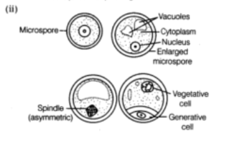
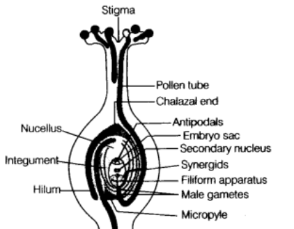
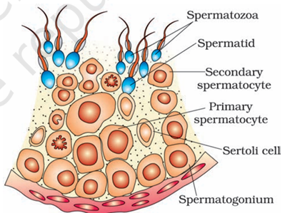
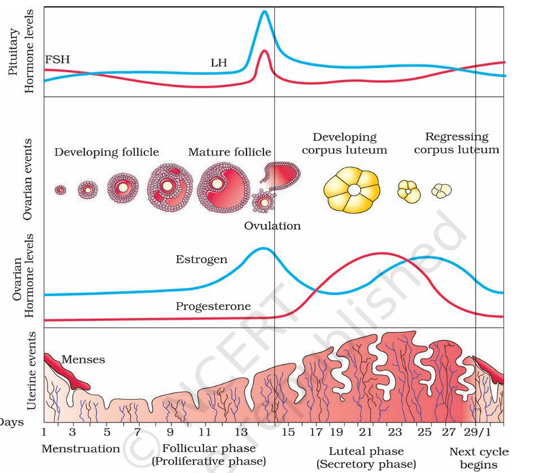
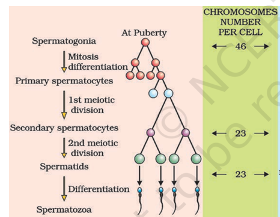
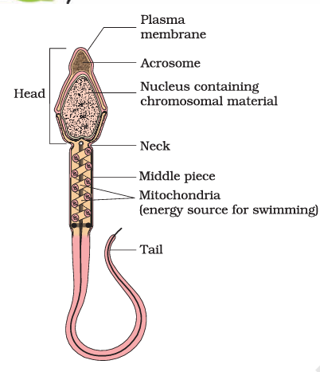
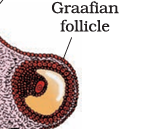
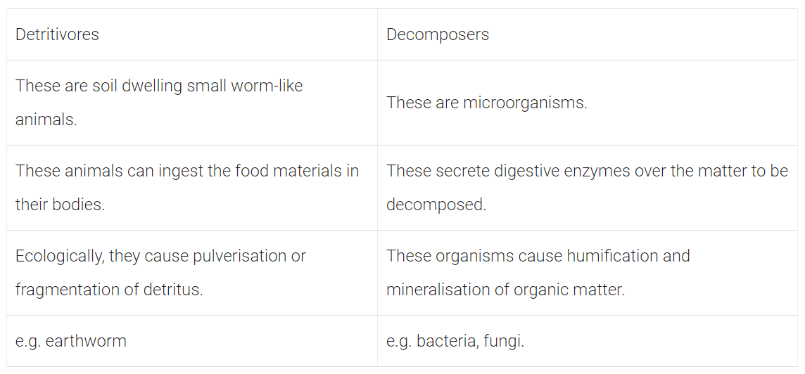
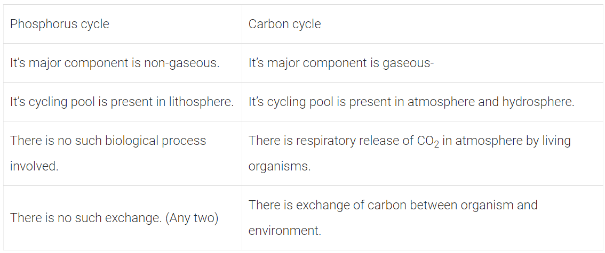

Chapter 1: Sexual Reproduction in Flowering Plants
Topic 1: Flower – A Fascinating Organ of Angiosperms
1 Mark Questions
Q1- Angiosperms bearing unisexual flowers are said to be either monoecious or dioecious. Explain with the help of one example each.
Solution- Plant bearing flowers of both sexes, i.e. staminate and pistillate flowers called monoecious, e.g. lea mays (maize). When both sexes, i.e. staminate and pistillate flowers, are present on different plants; these plants are called dioecious, e.g. Carica papaya (Papaya).
Q2- These pictures show the gynoecium of (A) Papaver and (B) Michelia flowers. Write the difference in the structure of their ovaries.
Solution- The gynoecium of Papaver is multicarpellary and syncarpous (pistils are fused together), the ovary can be unilocular to multilocular. The gynoecium of Michelia is multicarpellary and apocarpus (pistils are free) and the ovary is always unilocular.
Q3- Name the parts of the flower which the tassels of corn cob represent.
Solution- The parts of the flower that represent the tassels of corn cob are stigma and style which wave in the wind to trap pollen grains flowing with the wind.
2 Marks
Q3- Differentiate between the two cells enclosed in a mature male gametophyte of an angiosperm.
Solution- Haploid pollen grains represent the male gametophyte. It contains two cells, i.e. vegetative cell and generative cell. The vegetative or tube cell is larger in size as compared to generative cell and have a vacuolated cytoplasm. The generative cell on the other hand have thin dense cytoplasm with prominent nuclei that give rise to two male gametes, while vegetative cell does not.
3 Marks
Q1- A pollen grain in angiosperm at the time of dehiscence from an anther could be 2-celled or 3-celled. Explain, how are the cells placed within the pollen grain when shed at a 2-celled stage?
Solution- A pollen grain is partly germinated microspore representing the male gametophyte. It divides by unequal mitotic division and forms two cells. Thus, each mature pollen grain in angiosperms have a generative cell and a vegetative cell. In about 60% of angiosperms, pollen grains are shed at this 2-celled stage. However, in about 40% flowering plants, the generative cell may further divide mitotically to give rise to two male gametes and pollen grains are shed at this 3-celled stage.
Q2- In a flowering plant, a microspore mother cell produces four male gametophytes while a megaspore mother cell forms only one female gametophyte. Explain.
Solution- In flowering plants, microspore mother cells are found embedded in the spOrophytic tissue of anther. These cells undergo meiosis and give rise to four microspores that remain together in a microspore tetrad. After attaining maturity, these microspores separate from each other and each microspore develops into a male gametophyte or pollen grain. On the other hand, megaspore mother cell develops in the ovary of a flower and divides by meiotic division to produce four megaspores. From these, three degenerate while, the one undergoes further development and mitotic divisions to produce female gametophyte. Thus, in a flowering plant, a microspore mother cell produces four male gametophytes while, megaspore mother cell produces one female gametophyte.
Q3- In angiosperms, zygote is diploid, while primary endosperm cell is triploid. Explain.
Solution- In angiosperms or flowering plants, zygote is diploid and primary endosperm nucleus is triploid. It is because in these plants, one of the male gametes fuses with egg cell, which results in the formation of zygote. So, zygote is diploid. While primary endosperm cell is triploid because the nucleus of the second male gamete (n) fuses with the two haploid polar nuclei or diploid secondary nucleus (2n) of the central cell to form a triploid primary endosperm nucleus (3n). This process is referred to as triple fusion. The central cell is now called primary endosperm cell.
5 Marks
Q1- Describe the process of megasporogenesis up to fully developed embryo sac formation in an angiosperm.
Solution- In angiosperms, the process of megasporogenesis starts inside the nucellus of the ovule. During megasporogenesis, the Megaspore Mother Cell (MMC) undergoes meiosis resulting in the production of four megaspores. Out of the four megaspores, only one is functional while the other three degenerate. The functional megaspore undergoes mitosis to form two nuclei, which migrate to opposite poles, forming a 2-nucleate embryo sac. Further, mitotic divisions lead to the formation of 4-nucleate and 8-nucleate stages of the embryo sac. In these mitotic divisions, nuclear division is not followed by cell division. After the 8-nucleate stage, cell walls are laid down and a typical female gametophyte or embryo sac is formed. Among the 8 nuclei, 6 are enclosed by cell walls and organised into cells, while the remaining 2 nuclei (polar nuclei) are situated above the egg apparatus in a large central cell. Out of the six cells, three are grouped at the micropylar end and constitute the egg apparatus. It is made up of two synergids and one egg cell. The other three cells are located at the chalazal end and are called antipodals. Thus, a typical angiosperm embryo sac after maturity is 8-nucleate and 7-celled.
Q2- (i) Describe the sequence of the process of microsporogenesis in angiosperms.
(ii) Draw a labelled diagram of a 2-celled final structure formed.
Solution- (i) Development of pollen grain from Pollen Mother Cell (PMC) Pollen mother cell or microspore mother cell undergoes meiosis to form microspore tetrad or haploid microspores. As the anther matures, the microspores dissociate from the tetrad and develop into pollen grains. Nucleus of the microspores undergoes mitosis to form a large vegetative cell and small spindle-shaped generative cell. They develop a two-layered wall, the outer exine made of sporopollenin and the inner intine made of cellulose and pectin. Usually the pollen grains are liberated at this 2-celled stage. In certain species, the generative cell divides mitotically to form two male gametes and the pollen grains are 3-celled during liberation.
(ii)

Q3- (i) Describe the formation of mature female gametophyte within an ovule in angiosperms.
(ii) Describe the structure of cell that guides the pollen tube to enter the embryo sac.
Solution- (i) The functional megaspore undergoes mitosis to form 2 nuclei, which migrate to opposite poles, forming a 2-nucleate embryo sac. Further, mitotic divisions lead to the formation of 4-nucleate and 8-nucleate stages of the embryo sac. In these mitotic divisions, nuclear division is not followed by cell wall formation. After the 8-nucleate stage, cell walls are laid down and a typical female gametophyte or embryo sac is formed. Among the eight nuclei, six are enclosed by cell wall and organised into cells, while the remaining two nuclei (polar nuclei) are situated above the egg apparatus in a large central cell. Out of the six cells, three are grouped at the micropylar end and constitute the egg apparatus made up of two synergids and one egg cell. The other three cells are located at the chalazal end and are called antipodals. Thus, a typical angiosperm embryo sac after maturity is 8-nucleate and 7-celled.
(ii) The egg apparatus present towards the micropylar end, comprises of two synergids and an egg cell. These synergids possess special cellular thickenings at their micropylar tip and called filiform apparatus. This filiform apparatus guides the pollen tube to enter into embryo sac.
Topic 2: Pre-fertilisation : Structures and Events
1 Mark
Q1- Give an example of a plant which came into India as a contaminant and is a cause of pollen allergy.
Solution- Parthenium or Carrot grass is a major contaminant which came to India and caused pollen allergy.
Q2- Write one advantage and one disadvantage of cleistogamy to flowering plants.
Solution- The advantage of cleistogamy is that it ensures pollination in the absence of pollinators. Disadvantage of cleistogamy is that there is no chance of variation to occur.
2 Marks
Q1- A bilobed, dithecous anther has 100 microspore mother cells per microsporangium. How many male gametophytes this anther can produce?
Solution- An anther is a four-sided (tetragonal) structure consisting of four microsporangia.
Each microsporangium has 100 microsporemother cells,
so total number of microsporemother cells in anther = 4 × 100 = 400 microspore mother cells.
Meiosis in each microspore mother cell produces 4 male gametes, so 400 cells will produce = 4 × 400 = 1600 male gametes.
Q2- In the TS of a mature anther given below, identify ‘a’ and ‘b’ and mention their functions.
Solution- In the given figure, a is sporogenous tissue and b is tapetum.
Sporogenous tissue has cell which are potential Pollen Mother Cell (PMC) or microspore mother cell and give rise to microspore tetrad after meiotic cell division.
Tapetum nourishes the developing microspores or pollen grains.
Q3- What is pollen-pistil interaction and how is it mediated?
Solution- Pollen-pistil interaction is a chain or group of • events that take place from the falling of pollen over the stigma to the formation of pollen tube and its entry into the ovule. It is mediated by chemical components of pollen grain, interacting with that of pistil.
Q4- Differentiate between xenogamy and geitonogamy.
Solution- Xenogamy is the transfer of pollen grains from anther of one flower to the stigma of another flower of a different plant, while geitonogamy is the transfer of pollen grains from anther of one flower to the stigma of another flower on same plant.
Q5- Express the process of pollination in Vallisneria.
Solution- Vallisneria is a water pollinated plant. In this plant, the process of pollination involves reaching of female flower at the surface of water by the long stalk and release of pollen grains onto the surface of water. These pollen grains are carried water currents to reach the stigma eventually.
Q6- A single pea plant in your kitchen garden produces pods with viable seeds, but the individual papaya plant does not. Explain
Solution- A single pea plant produces pods with viable seeds because the pea plant is autogamous, i.e they have the ability of self-pollination. Whereas the individual papaya plant is prevented from both autogamy and geitonogamy. In this plant, male and female flowers are present on different plants, i.e. each plant is either male or female.
Q7- Emasculation and bagging are the two important steps carried during artificial hybridisation to obtain superior varieties of desired plants. Explain giving reasons, in which types of flowers and at what stages are the two processes carried out.
Solution-
| Geitonogamy | Xenogamy |
|---|---|
| It is the transfer of pollen grains from the anther to the stigma of another flower of same plant. | The pollen grains are genetically similar to the plant. |
| It is the transfer of pollen grains from the anther to the stigma of different plants. | The pollen grains are genetically different from the plant. |
3 Marks Questions
Q1- Pollen banks are playing a very important role in promoting plant breeding programme the world over. How are pollens preserved in the pollen banks? Explain. How are such banks benefitting our farmers? Write any two ways.
Solution-Pollen grains are stored for years in liquid nitrogen (-196°C) in pollen banks for later use in plant breeding programmes. Plant breeding is a technique of manipulation of plant species in order to create desired plant types that are better suited for cultivation, give better yield and are disease resistant. The objectives of such pollen banks include incorporation of certain traits or characters into crop plants in order to enhance the food production such as:
(i) Increased tolerance to environmental stresses such as salinity, extreme temperature, drought, etc.
(ii) Resistance to pathogens like viruses, fungi and bacteria.
Q2- (i) Name the organic material exine of the pollen grain is made up of. How is this material advantageous to pollen grain?
(ii) Still it is observed that it does not form a continuous layer around the pollen grain. Give reason.
(iii) How are ‘pollen banks’ useful?
Solution- (i) The organic material of exine of pollen grain is sporopollenin. This is most resistant biological material known so far. It protects pollen grains from damages.
(ii) Exine on pbllen grain is not a continuous layer. It is thin at places and pollen tube germinates by growth of intine through these thin parts of exine called germ pores.
(iii) Pollen banks are used to store pollen grains for short as well as long period of time in viable conditions.
Q3- What is cleistogamy? Write one advantage and one disadvantage of it, to the plant.
Solution- Cleistogamy is a type of self-pollination that occurs in a permanently closed flower. Advantage and disadvantage of cleistogamy are as follows:
Advantage Cleistogamous flowers produce assured seed-set even in the absence of pollinators.
Disadvantage Cleistogamous flowers are invariably autogamous. So, there is no chance of cross-pollination. Hence, less variations are generated in the progeny.
Q4- You are conducting artificial hybridisation on papaya and potato. Which one of them would require the step of emasculation and why ? However for both you will use the process of bagging. Justify giving one reason.
Solution- Papaya produces unisexual flowers and potato produces bisexual flowers. Therefore, the step of emasculation will be done on potato because emasculation is done on bisexual flower to avoid self-pollination. But, bagging is done on unisexual flowers, so to dust suitable pollen grains op the stigma when the stigma turns receptive and the flowers are rebagged.
Q5- List the different types of pollination depending upon the source of pollen grain.
Solution- Depending on the source of pollen grain, pollination can be classified into:
Autogamy It is the transfer of pollen grain from anther to the stigma of the same flower.
Geitonogamy It is the transfer of pollen grains from anther of one flower to the stigma of another flower on the same plant. Geitonogamy is functionally cross-pollination involving pollinating agent, but genetically it is equivalent to autogamy since the pollen grains come from the same plant.
Xenogamy It is the transfer of pollen grains from anther to the stigma of different plants of same species. It brings genetically different types of pollen grains to the stigma.
Q6-
(i) Can a plant flowering in Mumbai be pollinated by pollen grains of the same species growing in New Delhi? Provide explanation to your answer,
(ii) Draw the diagram of a pistil where pollination has successfully occurred. Label the parts involved in reaching the male gametes to its desired destination.
Solution-
(i) Yes, a plant flowering in Mumbai can be pollinated by pollen grains of the same species growing in New Delhi. It is mainly because there are certain agents of pollination that can carry pollen grains to long distance. Plants can use either abiotic or biotic agents for pollination. Abiotic pollinators include wind and water while biotic pollinators are insects, birds,
(ii) The parts involved in transferring the male gametes to its desired destination are stigma, style, micropyle, filiform apparatus and synergids. Longitudinal Section (LS) of a post-pollinated pistil is given below

Q7- What does an interaction between pollen grains and its compatible stigma result in after pollination? List two steps in sequence that follow after the process.
Solution- When the pollen grains fall on the stigma, the pollen tube enters one of the synergids and releases two male gametes.
-One of the male gametes moves towards the egg cell and fuses with it to complete syngamy to form the zygote.
-The other male gamete fuses with the two polar nuclei and forms triploid Primary Endosperm Nucleus (PEN). This is termed as triple fusion.
-Since, two kinds of fusion syngamy and triple fusion takes place, the process is known as double fertilisation and is characteristics of flowering plants.
5 Marks Questions
Q1- As a senior biology student you have been asked to demonstrate to the students of secondary level in your school, the procedure(s) that shall ensure cross-pollination in a hermaphrodite flower. List the different steps that you would suggest and provide reasons for each one of them.
Solution- Cross-pollination is done to mix two desired characters of two different species of a plant. For example, purple and white flower of a pea.
- Select two pea plants one with white and other with purple flower.
- Label them as male (white flowered) and female (purple flowered) plant.
- Cut anthers from purple flower with the help of scissors before their dehiscence to avoid self-pollination and cover it with white paper bag.
- Now collect pollens from the white flower (male plant) with the help of brush.
- Dust the pollens on the stigma of female (purple fewer) flower.
- Cover it again with paper bag till seed formation.
Q2- Flowering plants have developed many devices to discourage self-pollination and to encourage cross-pollination. Explain three such devices.
Solution- Hermaphrodites or bisexual flowers develop outbreeding devices to ensure cross-pollination and avoid self-pollination. The three outbreeding devices that flowering plants have developed to discourage self-pollination are
(i) Unisexuality (Dicliny) Flowers are unisexual, so that self-pollination is not possible. The plants may be monoecious (bearing both male and female flowers, e.g. maize) or dioecious (bearing male and female flowers on different plants, e.g. mulberry, papaya).
(ii) Dichogamy Anthers and stigmas mature at different times in a bisexual flower for preventing self-pollination.
(a) Protandry Anthers mature earlier than stigma of the same flower. The pollens thus btfcome available to stigmas of the older flowers, e.g. sunflower, Salvia.
(b) Protogyny Stigmas mature earlier, so that they get pollinated before the anthers of the same flower develop pollen grains, e.g. Mirabilis jalapa, Gloriosa, Plantago.
(iii) The third device to prevent self-pollination is self-incompatibility. It is a genetic mechanism that prevents self-pollen from fertilising the ovules by preventing pollen germination or pollen tube growth in the pistil. All these methods encourage cross-pollination thus causing genetic variations among them.
Topic 3:Double Fertilisation
2 Marks Questions
Q2- Why is fertilisation in an angiosperm referred to as double fertilisation? Mention the ploidy of the cells involved.
Solution- In fertilisation (in angiosperm), two types of fusion occur, i.e. syngamy and triple fusion, in the embryo sac. That is why it is called double fertilisation. Ploidy of cells involved in double fertilisation: Zygote is diploid (2n). It is formed as a result of syngamy, i.e. fusion of two haploid gametes (male gamete + egg). Primary endosperm nucleus (3M) is formed as a result of triple fusion, i.,e. fusion of two haploid polar nuclei with male gamete.
5 Marks Questions
Q1- Explain the phenomenon of double fertilisation.
Solution- The phenomenon of double fertilisation occurs in following steps
- In an angiospermic plant, two male gametes are discharged by a pollen tube into the cytoplasm of a synergid of the embryo sac.
- One of the male gametes fuses with the egg to form a zygote. This process is called syngamy.
- Other male gamete fuses with the secondary nucleus to form the primary endosperm nucleus, this process is called triple fusion.
Since, there are two fusions (syngamy and triple fusion) inside an ovule during fertilisation, it is known as double fertilisation.
Topic 4: Post-fertilisation: Structures and Events
Topic 5: Apomixis and Polyembryony
Chapter 2: Human Reproduction
Topic 1: Male and female reproductive system
1 Mark Questions
Q1- Why are human testes located outside the abdominal cavity? Name the pouch in which they are present.
Solution: Human testes are located outside the abdominal cavity as it helps in maintaining low temperature (2-2.5%) lower than body temperature) required for spermatogenesis. Testes are enclosed in a pouch called scrotum.
Q2- Write the function of the seminal vesicle.
Solution: Seminal vesicle produces an alkaline secretion containing prostaglandins, proteins and fructose. The high fructose content provides energy to the spermatozoa. These secretions form 60-70% of the fluid found in the semen.
2 Marks Questions
Q1- Why are human testes located outside the abdominal cavity? Name the pouch in which they are present.
Solution: Human testes are located outside the abdominal cavity as it helps in maintaining low temperature (2-2.5%) lower than body temperature) required for spermatogenesis. Testes are enclosed in a pouch called scrotum.
3 Marks Questions
Q1- Name and explain the role of inner and middle walls of human uterus.
Solution- The innermost wall of uterus is called endometrium.
Role of Endometrium
(i) It lines the uterine cavity and is glandular in nature.
(ii) It undergoes cyclic changes during menstrual cycle.
The middle wall or layer of uterus is called myometrium.
Role of Myometrium
(i) It is made up of thick layer of smooth muscles.
(ii) It shows strong contractions during the delivery of baby.
Topic 2: Microscopic anatomy of testis and ovary
Topic 3: Gametogenesis- spermatogenesis and oogenesis
2 Marks Questions
Q1- Draw a labelled diagrammatic sectional view of a human seminiferous tubule.
Solution-

3 Marks Questions
Q1-
(i) How many primary follicles are left in each ovary in a human female at puberty?
(ii) Draw a sectional view of the ovary showing the different follicular stages of a human female in her preovulatory phase of menstrual cycle.
Solution-
(i)A large number of primary follicles degenerate in females during the period from birth to puberty by the process called follicular atresia. As a result, about 60000-80000 primary follicles are left in each ovary at puberty.
(ii)

Q2- Schematically represent and explain the events of spermatogenesis in humans.
Solution-

5 Marks Questions
Q1- (i) Explain the process of spermatogenesis in humans.
(ii) Draw a human sperm and label acrosome and middle piece. Mention their functions.
Solution- (i) Spermatogenesis is the production of sperms in males.
In testis, the immature male germ cells (spermatogonia) produce sperms by spermatogenesis. It begins at puberty due to significant increase in the secretion of gonadotropins, i.e. luteinising hormone and follicle stimulating hormone under the influence of Gonadotropin Releasing Hormone (GnRH) released from hypothalamus. Spermatogonia (sing, spermatogonium) present on the inside wall of seminiferous tubules multiply by mitotic division and increases in numbers. Each spermatogonium is diploid and contains 46 chromosomes. Some of the spermatogonia transform to primary spermatocytes. The primary spermatocyte undergoes meiosis -1 and forms two haploid secondary spermatocytes containing 23 chromosomes each. The secondary spermatocytes undergo meiosis – II and form four equal sized haploid spermatids. Spermatids transform into the spermatozoa by spermiogenesis. After spermiogenesis, the sperm heads get embedded in the Sertoli cells and released from the seminiferous tubules via spermiation process.
(ii)
Q2-
(i) How is ‘oogenesis’ markedly different from ‘spermatogenesis’ with respect to the growth till puberty in the humans?
(ii) Draw a sectional view of human ovary and label the different follicular stages, ovum and corpus luteum.
Solution- (i) Oogenesis is markedly different from spermatogenesis in the following aspects:
| Spermatogenesis | Oogenesis | |
|---|---|---|
| It occurs in males. starting from puberty till the complete life cycle. | A single spermatogonium after second meiotic division forms four haploid sperrftatids that mature to form four spermatozoa. | The process of spermatogenesis, i.e. second meiotic division completes in testes and releases mature sperms. |
| It starts before birth during embryonic development and occurs till menopause. | A single oogonium, after second meiotic division, produces one ovum and two non-functional polar bodies. | The second meiotic division of oogenesis completes in Fallopian tube when sperm enters the secondary oocyte. |
Topic 4: Menstrual cycle
3 Marks Questions
Q1- Explain the events in a normal woman during her menstrual cycle on the following days
(i) Ovarian event from 13-15 days.
(ii) Ovarian hormones level from 16-23 days.
(iii) Uterine events from 24-29 days.
Solution-
(i) In the ovarian event from 13-15 days, a immature ovum (egg cell) is released from the Graafian follicle. Both LH and FSH attain maximum peak. FSH helps Graafian follicle to attain maturity and LH helps in its rupture. Ovum covered by a number of layer and a yellow fat layer forms corpus luteum. It releases (secretes) progesterone.
(ii) During menstrual cycle, the period level from 16-23 days is called luteal phase (secretory phase). The corpus luteum secretes large amount of progesterone which is essential for the maintenance of endometrium.
(iii) Uterine events from 24-29 days are under the influence of progesterone hormone. It influences the maintenance of the endometrium for any pregnancy to occur. In the absence of pregnancy, the corpus luteum degenerates and endometrium sheds off. It causes the menstrual flow or bleeding.
Q2- Explain the events in a normal woman during her menstrual cycle on the following days
(i) Pituitary hormone levels from 12 days.
(ii) Uterine events from 13-15 days.
(iii) Ovarian events from 16-23 days.
Solution-
(i) The period of 8-12 days after the onset of menstruation is the follicular phase. During this phase, GnRH from hypothalamus stimulates anterior pituitary to release FSH and LH. FSH stimulates the ovarian follicles to secrete oestrogen, which in turn stimulates the proliferation of the endometrium of the uterine wall. This causes the endometrial lining to thicken.
(ii) The uterine events between day 13 and 15 are governed by the high LH and FSH levels. The endometrium is intact due to the effect of these gonadotropin hormones and also prepares itself for pregnancy, if fertilisation occurs.
(iii) During 16-23 days, ruptured Graafian follicle gets converted into corpus luteum in the pvary. It starts secreting progesterone which maintains the endometrium, necessary for the implantation of fertilised ovum followed by other events of pregnancy.
Q3- Explain the development of a secondary oocyte (ovum) in a human female from the embryonic stage up to its ovulation. Name the hormones involved in this process.
Solution- Influence of Gonadotropins on Oogenesis:
- Gonadotropins, i.e., LH and FSH stimulate follicular development and secretion of oestrogen by the growing follicles.
- Both LH and FSH attain a peak level in the middle of the cycle (14th day).
- Rapid release of LH during mid-cycle causes ovulation.
- LH also stimulates the formation of corpus luteum from the ruptured follicle and secretion of progesterone from corpus luteum.
5 Marks Questions
Q1- Explain the steps in the formation of an ovum from oogonium in humans.
Solution- In human females, primary oocytes are formed from the oogonia during the embryonic developmental stages in the foetal ovaries.
- Oogonial cells start dividing and enter prophase-I of meiosis. They remain suspended at this stage as primary oocytes.
- Each primary oocyte is surrounded by a layer of granulosa cells and becomes the primary follicle.
- The primary follicle when surrounded by more layers of granulosa ceils, is called a secondary follicle.
- Secondary follicle transforms into a tertiary follicle, with the development of a fluid-filled cavity (antrum) around the primary oocyte.
- Granulosa cells become organised into an outer theca externa and an inner theca interna.
- Now, primary oocyte completes meiosis-I and forms a larger haploid secondary oocyte and a tiny first polar body.
- Tertiary follicle grows and becomes a mature follicle called Graafian follicle.
- Secondary oocyte secretes a new membrane called zona pellucida around it.
- At this stage, follicle ruptures to release the secondary oocyte, which moves into the cytoplasm.
- Secondary oocyte completes meiosis-II only when a sperm enters its cytoplasm. It forms a larger cell, the ootid and a small pell, the second polar body. This event occurs in the ampulla of Fallopian tube.
Q2-
(i) Explain menstrual cycle in human females.
(ii) How can the scientific understanding of the menstrual cycle of human females help as a contraceptive measure ?
Solution- (i) Menstrual Cycle The inner lining of uterus called endometrium, grows and thickens each month and prepares itself for the implantation of an embryo. If tht) pregnancy does not occur, the endometriumisheds off. The monthly development and shedding of the functional layer of the uterus is called the menstrual phase and the monthly maturation of an egg and its release is called the ovarian cycle. A typical menstrual cycle completes in an average of about. 28 days. It starts at the age of 13 or 15 and continues till about 50 years of age. Menstrual cycle occurs in three major phases namely menstrual phase, follicular phase and secretory phase.
(a) Menstrual Phase It lasts for 3-4 days. It occurs due to the breakdown of endometrium lining cf uterus and blood vessels.
(b) Follicular Phase or Proliferative Phase. It is regulated by the hormones secreted by anterior pituitary gland whose secretions stimulate the ovarian follicle to secrete oestrogens.
During the second week, most of the developing follicles die and one follicle continues to grow and gets mature to form Graafian follicle.
(c) Secretory Phase or Luteal phase The phase of menstrual cycle with possibility of fertilisation is the initial luteal phase. It is marked by the presence of corpus luteum (yellow body). During pregnancy, this yellow body secretes progesterone. In the absence of pregnancy, it regresses to form corpus albicans and menstruation starts (menstrual phase). Due to the hormones secreted by corpus luteum, i.e. oestrogen and progesterone, the release of FSH and LH is inhibited. This prevents the development of new follicles. This phase lasts for 14 days.
Maintenance of endometrium by progesterone is necessary for the implantation of embryo and pregnancy. During pregnancy, menstrual cycle stops due to high level of progesterone.
(ii) The scientific understanding of the menstrual cycle of human females helps as a contraceptive method. This method is known as periodic abstinence. In this method, the couples avoid or abstain the coitus from day 10 to 17 of the menstrual cycle when ovulation could be expected. The chances of fertilisation are very high during this period.
Q3-
(i) Explain the menstrual phase in a human female. State the level of ovarian and pituitary hormones during this phase.
(ii) Why is follicular phase in the menstrual cycle also referred as proliferative phase? Explain.
(iii) Explain the events that occur in a Graafian follicle at the time of ovulation and thereafter.
(iv) Draw a Graafian follicle and label antrum and secondary oocyte.
Solution-
(i) The reproductive cycle in female primates, e.g. monkeys, apes and human beings is called menstrual cycle. Menstrual phase starts from 3rd day and ends on 5th day of the menstrual cycle. It is initiated due to the reduced secretion of progesterone and oestrogen from the regressing corpus luteum in the ovary. The endometrium breaks down and blood along with degenerated ovum constitutes the menstrual flow. The secretion of pituitary hormones, i.e. FSH and LH is also reduced during this phase.
(ii) In follicular phase, primary follicles in the ovary grow under the influence of Follicle Stimulating Hormone (FSH). It starts from 6th day and ends on 13 th or 14th day of 28 day cycle. FSH also stimulates the ovarian follicles to secrete oestrogen which in turn stimulates endometrium to proliferate, so that it becomes thicker and highly vascularised. Thus, it is also called proliferative stage of menstrual cycle.
(iii) Graafian Follicle at Ovulation:
At the time of ovulation following events occur
- LH and FSH reach at their peak levels (about 14th-16th day of cycle).
- High level of LH induces Graafian follicle to rupture and the release of secondary oocyte from it.
- After ovulation, the remaining cells of Graafian follicle are stimulated by LH to develop corpus luteum (an endocrine gland which secrete progesterone hormone).
(iv) Diagrammatic sectional view of Graafian follicle:

Q4- Describe the roles of pituitary and ovarian hormones during the menstrual cycle in a human female.
Solution- The cycle of events starting from one menstruation till next in female primates is called menstrual cycle. It comprises of four phases which are regulated by both pituitary (LH and FSH) and ovarian (oestrogen and progesterone) hormones that affect ovaries and uterus, respectively. The events occurring in a menstrual cycle are as follows
| Menstrual phase (from 3rd-5th day in a 28 day cycle) | Initiated by reduced secretion of LH, progesterone and oestrogen. The endometrium breaks down and blood along with unfertilised ovum constitutes menstrual flow. |
|---|---|
| Follicular phase (from 6th-13th day in a 28 day cycle) | The FSH (Follicle Stimulating Hormone) secreted by anterior pituitary stimulates ovarian follicle to secrete oestrogens. These oestrogens stimulate proliferation of uterine walls as a result of which endometrium gets thickened (due to rapid cell division and increase in uterine glands and blood vessels). |
| Ovulatory phase (14th day in 28 day cycle) | Pituitary hormones, i.e. LH and FSH reach the highest level in middle of the cycle. Rapid secretion of LH causes ovulation thus, inducing the rupture of Graafian follicle to release secondary oocyte and a polar body. |
| Luteal or secretory phase (from 15th-28th day in a 28 day cycle) | The pituitary hormone LH stimulates the remaining cells of ovarian follicles to develop into corpus luteum. This corpus luteum secretes large amount of progesterone and maintains endometrium thickening for the implantation of fertilised ovum during pregnancy. In the absence of fertilisation, the hormone levels are reduced (LH and progesterone) and endometrium disintegrates leading to onset of another menstrual cycle. |
Chapter 3: Reproductive Health
Topic 1: Need for reproductive health
1 Mark Questions
Q1- Our government has intentionally imposed strict conditions for MTP in our country. Justify giving a reason.
Solution- MTP or induced abortion is the termination of pregnancy due to certain medical reasons. Government of India legalised MTP in 1971 with strict conditions to avoid its misuse, i.e. to check indiscriminate and illegal female foeticides.
Q2- Name an IUD that you would recommend to promote the cervix hostility to sperms
Solution- The hormone releasing IUDs, e.g. progestasert and LNG-20 are recommended to promote the cervix hostility to sperms.
2 Marks Questions
Q1- Mention the problems that are taken care of by Reproduction and Child Healthcare Programme.
Solution- Reproduction and Child Healthcare (RCH) programmes cover wide range of reproduction related areas. They include
- Creating awareness among people about various reproduction related aspects.
- Support for building up a reproductively healthy society by providing increased medical facilities, better postnatal care, better detection and cure of diseases like STDs, etc.
Q2- What is amniocentesis? How is it misused?
Solution- Amniocentesis is a prenatal diagnostic test. It is named so, because it is based on the chromosomal pattern of the cells in the amniotic fluid that surrounds the developing foetus in the womb. It is misused to detect the sex of pre-born child that leads to female foeticide. Hence, there is statutory ban on amniocentesis.
Topic 2: Birth control – need and methods
1 Mark< Questions/h4>
Q1- State one reason, why breastfeeding the baby acts as a natural contraceptive for the mother.
Solution Lactation or Breastfeeding the baby delays the onset or return of menstruation and ovulation cycle due to interference of hormone prolactin. Therefore, the chances of conception are nil during this period, i.e. up to six months. Hence, breastfeeding the baby may act as a natural contraceptive (lactational amenorrhea) for mother.
2 Marks Questions
Q1- Mention one positive and one negative application of amniocentesis.
Solution-
- Positive,application It can be used to diagnose any chromosomal abnormality or genetic disorder in foetus.
- Negative application It can be used to determine the sex of foetus and lead to female foeticide.
Q2- Why is tubectomy considered a contraceptive method?
Solution- In tubectomy, a small part of Fallopian tube or oviduct is cut and tied up to block the passage of ova from ovary to the site of fertilisation in Fallopian tube. It prevents fertilisation. So, it is considered as a contraceptive method.
Q3- Why is Cu-T considered a good contraceptive device to space children?
Solution- Copper-T (Cu-T) is an Intra Uterine Device (IUD) that is inserted by experts and it serves as an effective contraceptive in the following ways
- Increases phagocytosis of sperms within the uterus.
- Copper ions released by Cu-T suppress the motility of sperms and their fertilising ability.
3 Marks Questions
Q1- What do oral pills contain and how do they act as effective contraceptives?
Solution- Oral contraceptives or pills contain either progestogens or progesterone-oestrogen combinations. They function as contraceptives by
- inhibiting ovulation.
- inhibiting implantation.
- altering the quality of cervical mucus to prevent the motility of sperms in female reproductive tract.
Q2- Name and explain the surgical method advised to human males and females as a mean of birth control. Mention its one advantage and one disadvantage.
Solution- The surgical or sterilisation methods advised to human males and females as effective means of birth control are
- Vasectomy (In males) A sterilisation method in which a small portion of vas deferens is removed or tied up through a cut or incision on scrotum, thus blocking the transport of sperms from the testes to the copulatory organ.
- Tubectomy (In females) A sterilisation method in which small part of Fallopian tube is removed or tied up through incision in abdomen or through vagina. It blocks the passage of ova from ovary to the site of fertilisation.
The advantage of these two sterilisation methods in both human males and females is that it is a very effective method for preventing conception as it blocks the transport of gametes. The disadvantage of this method is that this surgical procedure cannot be reversed, so it is helpful for only those who already have children and do not want to extend their family further.
Chapter 4: Principles of Inheritance and Variation
Topic 1:Heredity and variation
1 Mark Questions
Q1-Define heredity. (65/3 2017)
Solution-Heredity is the passing of traits from parents to offspring through the transmission of genes.
Q2- What is a gene? (65/2 2013)
Solution- A gene is a segment of DNA that contains the instructions for making a specific protein or RNA molecule, which contributes to an individual's traits.
Q3-Explain the term 'allele'. (65/2 2013)
Solution- An allele is one of two or more alternative forms of a gene that arise by mutation and are found at the same place on a chromosome.
3 Mark Questions
Q1-Describe Mendel's law of segregation. (65/3 2017)
Solution-Mendel's law of segregation states that during the formation of gametes, the two alleles for a trait separate (segregate) from each other so that each gamete carries only one allele for each trait.
Q2-Differentiate between genotype and phenotype. (65/2 2013)
Solution-Genotype refers to the genetic makeup of an organism, represented by the combination of alleles it possesses. Phenotype, on the other hand, refers to the observable physical and biochemical characteristics of an organism, which result from the interaction between its genotype and the environment.
Q3-Explain the significance of genetic variation. (65/2 2013)
Solution-Genetic variation is essential for the survival and adaptation of species. It provides the raw material for natural selection, allowing populations to evolve in response to changes in the environment. Additionally, genetic variation contributes to the overall health and resilience of populations by reducing the risk of diseases and increasing the chances of survival in challenging conditions.
5 Mark Questions
Q1-Discuss the role of meiosis in generating genetic variation. (65/3 2017)
Solution- Meiosis is a type of cell division that produces gametes (sperm and eggs) with half the number of chromosomes as the parent cell. It introduces genetic variation through several mechanisms:
Independent assortment: Homologous chromosomes randomly align and separate during meiosis I, leading to the production of gametes with different combinations of alleles.
Crossing over: Exchange of genetic material between homologous chromosomes during prophase I results in new combinations of alleles on the chromatids.
Random fertilization: The chance fusion of gametes during fertilization results in zygotes with unique combinations of alleles.
Q2-Explain the concept of multiple alleles with an example.(65/2 2013)
Solution-Multiple alleles refer to the existence of more than two alleles for a particular gene in a population. A classic example is the ABO blood group system in humans. The gene responsible for the ABO blood groups (located on chromosome 9) has three common alleles: A, B, and O. Each individual inherits two of these alleles, resulting in four possible blood types: A, B, AB, and O.
Q3-How does environmental influence affect phenotypic variation? Provide examples.(65/2 2013)
Solution- Environmental factors can influence gene expression and, consequently, phenotypic variation. Examples include:
Nutrition: Adequate nutrition is crucial for proper growth and development. Malnutrition can lead to stunted growth and developmental abnormalities.
Temperature: Temperature can affect enzyme activity and metabolic processes. For instance, temperature influences the coloration of Siamese cats and the sex determination of some reptiles.
Light: Light intensity and duration can affect the flowering time of plants and the coloration of organisms such as chameleons.
Stress: Environmental stressors, such as pollution or drought, can impact gene expression and physiological processes, leading to changes in phenotype.
Topic 2:Mendelian inheritance
1 Mark Questions
Q1-Define Mendelian inheritance. (65/3 2017)
Solution- Mendelian inheritance refers to the pattern of inheritance of traits that follows the principles discovered by Gregor Mendel, involving the segregation and independent assortment of alleles during gamete formation.
Q2-What is a monohybrid cross? (65/2 2013)
Solution-A monohybrid cross involves the mating of individuals that are heterozygous for one particular trait, resulting in the examination of the inheritance pattern of a single trait.
Q3-Explain the term 'dominant allele'. (65/2 2013)
Solution-A dominant allele is an allele that masks the effect of its corresponding recessive allele when present in a heterozygous genotype, expressing its trait in the phenotype.
3 Mark Questions
Q1-Describe Mendel's law of dominance. (65/3 2017)
Solution-Mendel's law of dominance states that in a heterozygous genotype, one allele (the dominant allele) will be expressed phenotypically, masking the effect of the other allele (the recessive allele).
Q2-Explain Mendel's law of independent assortment. (65/2 2013)
Solution-Mendel's law of independent assortment states that alleles of different genes segregate independently during gamete formation, provided that the genes are located on different chromosomes or are far apart on the same chromosome.
Q3-Differentiate between genotype and phenotype with an example. (65/2 2013)
Solution-Genotype refers to the genetic makeup of an organism, represented by the combination of alleles it possesses. Phenotype, on the other hand, refers to the observable physical and biochemical characteristics of an organism, which result from the interaction between its genotype and the environment. For example, in the case of flower color in pea plants, the genotype might be represented by the alleles for flower color (e.g., YY, Yy, yy), while the phenotype would be the actual color of the flowers (e.g., yellow or green).
5 Mark Questions
Q1-Discuss the significance of Mendel's experiments with pea plants. (65/3 2017)
Solution-Mendel's experiments with pea plants laid the foundation for modern genetics and provided insights into the principles of heredity. His meticulous breeding experiments and mathematical analysis led to the discovery of fundamental laws of inheritance, including the law of segregation and the law of independent assortment. These laws form the basis of Mendelian genetics and continue to influence our understanding of genetic inheritance.
Q2-Explain the inheritance pattern of a dihybrid cross using Mendel's principles. (65/2 2013)
Solution- In a dihybrid cross, two traits governed by different genes are examined simultaneously. Mendel's principle of independent assortment predicts that alleles of different genes segregate independently during gamete formation. As a result, the inheritance of one trait is independent of the inheritance of the other trait. The phenotypic ratio of the offspring in a dihybrid cross is expected to follow a 9:3:3:1 ratio for traits showing complete dominance.
Q3- How do Mendel's principles of inheritance apply to human traits?(65/2 2013)
Solution- Many human traits, such as hair color, eye color, and certain genetic disorders, can be explained by Mendel's principles of inheritance. These traits are often governed by single genes with two or more alleles, and their inheritance patterns can be analyzed using Punnett squares and pedigree analysis. However, complex traits influenced by multiple genes and environmental factors may not always follow simple Mendelian patterns of inheritance.
Topic 3:Incomplete dominance
1 Mark Questions
Q1-Define incomplete dominance. (65/3 2017)
Solution-Incomplete dominance is a form of intermediate inheritance in which one allele for a specific trait is not completely dominant over the other allele, resulting in a heterozygous phenotype that is a blend of the two homozygous phenotypes.
Q2-Provide an example of incomplete dominance. (65/2 2013)
Solution- An example of incomplete dominance is the inheritance of flower color in snapdragons. When a red-flowered plant (RR) is crossed with a white-flowered plant (WW), the offspring (RW) exhibit pink flowers, demonstrating incomplete dominance.
Q3- Explain the term 'heterozygote'.(65/2 2013)
Solution- A heterozygote is an individual that carries two different alleles (one dominant and one recessive) for a particular gene locus.
3 Mark Questions
Q1- Describe the phenotypic and genotypic ratios resulting from a cross involving incomplete dominance.(65/3 2017)
Solution-In incomplete dominance, the phenotypic ratio among the offspring of a heterozygous cross is typically 1:2:1, representing the three possible genotypes. The genotypic ratio is 1:2:1 as well, with one homozygous dominant genotype (RR), two heterozygous genotypes (RW), and one homozygous recessive genotype (WW).
Q2- Compare and contrast incomplete dominance with complete dominance.(65/2 2013)
Solution- In complete dominance, one allele completely masks the effect of the other allele in the heterozygous condition, resulting in a phenotypic ratio of 3:1 in the offspring. In contrast, incomplete dominance occurs when neither allele is completely dominant over the other, resulting in a phenotypic ratio of 1:2:1 in the offspring. Incomplete dominance produces a heterozygous phenotype that is an intermediate blend of the two homozygous phenotypes.
Q3- Provide an example of a human trait that exhibits incomplete dominance.(65/2 2013)
Solution-An example of incomplete dominance in humans is the inheritance of hair texture. Individuals with straight hair (homozygous dominant genotype) and individuals with curly hair (homozygous recessive genotype) produce offspring with wavy hair (heterozygous genotype), demonstrating incomplete dominance.
5 Mark Questions
Q1-Discuss the significance of incomplete dominance in evolutionary biology. (65/3 2017)
Solution-Incomplete dominance contributes to genetic variation within populations by generating novel phenotypes that may have adaptive advantages in changing environments. This variation can be acted upon by natural selection, leading to the evolution of new traits and species. Additionally, incomplete dominance allows for the maintenance of genetic diversity within populations, which is essential for their long-term survival and adaptation to environmental challenges.
Q2-Explain how incomplete dominance differs from co-dominance. (65/2 2013)
Solution-In incomplete dominance, the heterozygous phenotype is an intermediate blend of the two homozygous phenotypes, while in co-dominance, both alleles are fully expressed in the heterozygous condition. In co-dominance, the heterozygous phenotype exhibits characteristics of both homozygous phenotypes simultaneously, without any blending. An example of co-dominance is the ABO blood group system in humans, where individuals with the AB genotype express both A and B antigens on their red blood cells.
Q3-How does incomplete dominance challenge the traditional Mendelian view of inheritance? (65/2 2013)
Solution- Incomplete dominance challenges the traditional Mendelian view of inheritance by demonstrating that not all traits are governed by complete dominance and recessiveness. Instead, some traits exhibit an intermediate phenotype in heterozygous individuals, indicating a more complex pattern of inheritance. Incomplete dominance highlights the importance of gene interactions and allelic variation in shaping phenotypic diversity within populations, expanding our understanding of genetic inheritance beyond simple Mendelian ratios.
Topic 4:Codominance and multiple alleles and inheritance of blood groups
1 Mark Questions
Q1-Define codominance. (65/3 2017)
Solution-Codominance is a type of inheritance pattern where both alleles of a gene are fully expressed in the heterozygous genotype, resulting in the simultaneous expression of both phenotypes.
Q2-What are multiple alleles? (65/2 2013)
Solution- Multiple alleles are three or more alternative forms of a gene (alleles) that exist within a population, with each individual possessing only two of these alleles.
Q3-Provide an example of codominance. (65/2 2013)
Solution-An example of codominance is the inheritance of the ABO blood group system in humans, where individuals with the AB genotype express both A and B antigens on their red blood cells.
3 Mark Questions
Q1- Describe the inheritance pattern of blood groups in humans.(65/3 2017)
Solution-The inheritance of blood groups in humans is governed by multiple alleles of the ABO gene located on chromosome 9. There are three main alleles: IA, IB, and i. The IA and IB alleles are codominant, while the i allele is recessive. Individuals can have one of four blood types: A (IAIA or IAi), B (IBIB or IBi), AB (IAIB), or O (ii).
Q2-Explain the concept of codominance with respect to blood groups. (65/2 2013)
Solution- In the ABO blood group system, the IA and IB alleles are codominant. Individuals with the IAIB genotype express both A and B antigens on their red blood cells, resulting in blood type AB. This demonstrates codominance, where both alleles are fully expressed in the heterozygous genotype.
Q3-Discuss the significance of multiple alleles in the inheritance of blood groups. (65/2 2013)
Solution- Multiple alleles in the ABO blood group system provide genetic diversity within populations and contribute to the wide range of blood types observed in humans. The presence of three alleles (IA, IB, and i) results in four possible blood types, each with unique antigenic properties. This diversity is important for blood transfusions, as compatibility between donor and recipient blood types must be considered to avoid adverse reactions.
5 Mark Questions
Q1-Explain how the ABO blood group system demonstrates both codominance and multiple alleles. (65/3 2017)
Solution-In the ABO blood group system, the IA and IB alleles are codominant, meaning that both alleles are fully expressed in the heterozygous genotype. Individuals with the IAIB genotype express both A and B antigens on their red blood cells, resulting in blood type AB. Additionally, the ABO gene exhibits multiple alleles, as there are three main alleles (IA, IB, and i) within the population. This combination of codominance and multiple alleles results in the four possible blood types: A (IAIA or IAi), B (IBIB or IBi), AB (IAIB), and O (ii).
Q2- Discuss the inheritance of blood groups in a family with parents of blood types A and B.(65/2 2013)
Solution- If both parents have blood types A and B, respectively, they must be heterozygous for the A and B alleles (IAi and IBi). Their offspring could inherit any combination of these alleles, resulting in various blood types: A (IAIA or IAi), B (IBIB or IBi), AB (IAIB), or O (ii). The phenotypic ratio of the offspring would depend on the specific genotypes of the parents and follows Mendelian inheritance patterns.
Q3-How does the inheritance of blood groups impact medical practices such as blood transfusions? (65/2 2013)
Solution-The inheritance of blood groups impacts medical practices such as blood transfusions by determining the compatibility between donor and recipient blood types. For example, individuals with blood type A can receive blood from donors with blood types A or O, but not from donors with blood types B or AB. Understanding blood group inheritance allows medical professionals to match donor and recipient blood types to minimize the risk of adverse reactions, such as hemolytic transfusion reactions.
Topic 5:Pleiotropy
1 Mark Questions
Q1-Define pleiotropy. (65/3 2017)
Solution-Pleiotropy is a phenomenon in genetics where a single gene influences multiple, seemingly unrelated phenotypic traits.
Q2- Provide an example of pleiotropy.(65/2 2013)
Solution-An example of pleiotropy is seen in the genetic disorder phenylketonuria (PKU), where a mutation in the PAH gene leads to multiple phenotypic effects including intellectual disability, seizures, and skin disorders.
Q3-Explain the term 'gene pleiotropy'. (65/2 2013)
Solution-Gene pleiotropy refers to the situation where a single gene influences multiple phenotypic traits in an organism.
3 Mark Questions
Q1-Describe the molecular basis of pleiotropy. (65/3 2017)
Solution-Pleiotropy arises from the fact that a single gene can code for a protein that plays multiple roles or has multiple functions within the cell. Mutations in such genes can affect multiple biological processes, leading to a variety of phenotypic effects.
Q2-Discuss the significance of pleiotropy in evolutionary biology. (65/2 2013)
Solution- Pleiotropy can have profound implications for evolutionary processes. It can lead to genetic constraints, where selection acting on one trait may inadvertently affect other traits linked to the same gene. This can influence the direction and rate of evolutionary change, potentially limiting the evolutionary pathways available to populations.
Q3- Provide an example of pleiotropy in plants.(65/2 2013)
Solution-An example of pleiotropy in plants is seen in the maize (corn) gene tb1. Mutations in the tb1 gene affect multiple phenotypic traits including plant height, leaf architecture, and branching patterns. These diverse effects of a single gene contribute to the overall morphology and growth habit of the plant.
5 Mark Questions
Q1-Explain how pleiotropy differs from polygenic inheritance. (65/3 2017)
Solution-Pleiotropy involves a single gene influencing multiple phenotypic traits, while polygenic inheritance involves multiple genes influencing a single phenotypic trait. Pleiotropy arises from mutations in a single gene with multiple effects, whereas polygenic inheritance involves the additive effects of alleles at multiple genetic loci.
Q2-Discuss the implications of pleiotropy for human health and disease. (65/2 2013)
Solution-Pleiotropic effects of genes can contribute to the complexity of human diseases and their variability in presentation. For example, mutations in the BRCA1 gene are associated with an increased risk of breast and ovarian cancer, but also with other health issues such as male infertility and prostate cancer. Understanding the pleiotropic effects of genes is essential for accurately diagnosing and treating complex diseases.
Q3-How does pleiotropy contribute to genetic disorders? (65/2 2013)
Solution- Pleiotropy can contribute to the development of genetic disorders by affecting multiple physiological systems or pathways. Mutations in genes with pleiotropic effects can lead to a constellation of seemingly unrelated symptoms or traits, making diagnosis and treatment challenging. Studying the pleiotropic effects of genes is crucial for understanding the underlying mechanisms of genetic disorders and developing targeted therapeutic interventions.
Chapter 5: Molecular Basis of Inheritance
Topic 1:Search for genetic material and DNA as genetic material
1 Mark Questions
Q1- (65/3 2017)
Solution-
Q2- (65/2 2013)
Solution-
Q3- (65/2 2013)
Solution-
Chapter 7: Human Health and Diseases
Topic 1: Common Diseases in Humans
1 Mark Questions
Q1- What is the causative agent of Tuberculosis? (65/3 2017)
Solution- Mycobacterium tuberculosis.
Q2- Name the vector responsible for the transmission of Malaria. (65/2 2013)
Solution- Female Anopheles mosquito.
Q3- Which virus causes AIDS? (65/2 2013)
Solution- Human Immunodeficiency Virus (HIV).
2 Mark Questions
Q1- Describe the transmission, symptoms, and preventive measures for Tuberculosis (TB).(65/3 2019)
Solution-~Transmission: Tuberculosis is primarily transmitted through the air when an infected person coughs or sneezes, releasing bacteria into the air which can be inhaled by others.
~Symptoms: Common symptoms of TB include a persistent cough, chest pain, coughing up blood, fatigue, weight loss, fever, and night sweats.
~Preventive Measures: Prevention of TB includes vaccination (BCG vaccine), early detection and treatment of infected individuals, promoting good ventilation in living spaces, and practicing proper respiratory hygiene to prevent the spread of the bacteria.
Q2- Discuss the causative agent, mode of transmission, and preventive strategies for HIV/AIDS.(65/2 2018)
Slution-
~Causative Agent: Human Immunodeficiency Virus (HIV) is the causative agent of Acquired Immunodeficiency Syndrome (AIDS).
~Mode of Transmission: HIV is primarily transmitted through unprotected sexual intercourse, sharing contaminated needles, or from an infected mother to her child during pregnancy, childbirth, or breastfeeding.
~Preventive Strategies: Preventive measures for HIV/AIDS include practicing safe sex, avoiding sharing needles, early detection through regular testing, promoting awareness and education about the disease, and providing access to antiretroviral therapy (ART) for infected individuals to suppress the virus and prevent transmission.
Q3- Explain the causative agent, symptoms, and preventive measures for Malaria.
Solution-
~Causative Agent: Malaria is caused by the Plasmodium parasite, which is transmitted to humans through the bite of infected female Anopheles mosquitoes.
~Symptoms: Symptoms of malaria include fever, chills, sweating, headache, muscle aches, and fatigue. In severe cases, it can lead to complications such as organ failure and death.
~Preventive Measures: Preventive strategies for malaria include the use of insecticide-treated bed nets, indoor residual spraying to kill mosquitoes, taking antimalarial medications as prophylaxis in endemic areas, and eliminating mosquito breeding sites by draining stagnant water sources. Additionally, research is ongoing for the development of a malaria vaccine.
3 Mark Questions
Q1-Explain the causative agents, symptoms, and preventive measures for two common infectious diseases prevalent in humans.(65/3 2013)
Solution-a) Tuberculosis (TB):
~Causative Agent: Mycobacterium tuberculosis bacterium.
~Symptoms: Persistent cough, chest pain, weight loss, fever, and coughing up blood.
~Preventive Measures:
BCG (Bacillus Calmette-Guérin) vaccination at birth.
Avoiding close contact with TB-infected individuals.
Adequate ventilation in living spaces.
Completing the full course of antibiotics if diagnosed with TB.
b) Malaria:
~Causative Agent: Plasmodium parasites (especially Plasmodium falciparum and Plasmodium vivax) transmitted through the bite of infected female Anopheles mosquitoes.
~Symptoms: High fever, chills, sweats, headache, and nausea.
~Preventive Measures:
Use of insect repellents and mosquito nets.
Elimination of mosquito breeding sites by proper waste disposal and water management.
Taking antimalarial drugs as prophylaxis if traveling to endemic areas.
Indoor residual spraying with insecticides.
Q2-Discuss the role of lifestyle factors in the development of non-communicable diseases among humans.
Solution- Non-communicable diseases (NCDs) are chronic diseases not caused by infectious agents but rather by genetic, physiological, environmental, and behavioral factors. Lifestyle factors play a significant role in the development of NCDs. Here's how:
a) Dietary Habits: Poor dietary choices high in saturated fats, salt, and sugar contribute to obesity, hypertension, diabetes, and cardiovascular diseases.
b) Physical Activity: Sedentary lifestyles with insufficient physical activity increase the risk of obesity, diabetes, cardiovascular diseases, and certain cancers.
c) Tobacco Use: Smoking and tobacco consumption are major risk factors for lung diseases (like chronic obstructive pulmonary disease and lung cancer), cardiovascular diseases, and various cancers.
d) Alcohol Consumption: Excessive alcohol intake is associated with liver diseases, cardiovascular diseases, certain cancers, and mental health disorders.
e) Stress: Chronic stress can weaken the immune system, increase blood pressure, and contribute to the development of mental health disorders like depression and anxiety.
f) Sleep Patterns: Disrupted sleep patterns or insufficient sleep can increase the risk of obesity, diabetes, hypertension, and cardiovascular diseases.
Topic 2: Immunity
2 Marks Questions
Q1-Explain the process of active immunity and passive immunity. Compare and contrast their mechanisms and duration.(65/3 2012)
Solution-
~Active Immunity: Active immunity is developed when the body's immune system responds to the presence of antigens by producing antibodies. This can occur naturally, such as when a person contracts a disease and recovers, or artificially, through vaccination. In active immunity, memory cells are produced, providing long-term protection against future infections. It takes time for active immunity to develop, usually weeks to months, but it offers lasting protection.
~Passive Immunity: Passive immunity, on the other hand, is acquired when pre-formed antibodies are transferred from one individual to another. This can occur naturally, such as the transfer of antibodies from mother to fetus during pregnancy or through breastfeeding, or artificially, by injecting antibodies obtained from another individual or an animal. Passive immunity provides immediate but temporary protection, as the transferred antibodies degrade over time and are not replenished by the recipient's immune system. It does not involve the production of memory cells and therefore does not confer long-term immunity.
Q2- Describe the role of lymphocytes in the immune system. Explain the functions of B cells and T cells, and how they contribute to the body's defense against pathogens.(65/3 2012)
Solution-
~Role of Lymphocytes: Lymphocytes are a type of white blood cell that plays a central role in the immune system. They are responsible for identifying and targeting pathogens, such as bacteria, viruses, and other foreign substances, for destruction. There are two main types of lymphocytes: B cells and T cells.
~B Cells: B cells are involved in humoral immunity, where they produce antibodies that recognize and bind to specific antigens present on the surface of pathogens. This binding marks the pathogens for destruction by other immune cells or neutralizes their harmful effects. B cells also give rise to memory B cells, which provide long-term immunity by quickly producing antibodies upon re-exposure to the same pathogen.
~T Cells: T cells are involved in cell-mediated immunity, where they directly attack and destroy infected or abnormal cells. There are several types of T cells, including helper T cells, cytotoxic T cells, and regulatory T cells. Helper T cells coordinate the immune response by activating B cells and cytotoxic T cells, while cytotoxic T cells directly kill infected cells. Regulatory T cells help prevent excessive immune responses and maintain immune tolerance.
Together, B cells and T cells play complementary roles in the immune system, providing both specific and long-lasting protection against pathogens.
4 Mark Questions
Q1- Describe the process of cell-mediated immunity. Explain the role of T lymphocytes in this process.(65/3 2013)
Solution-Cell-mediated immunity is an immune response that involves the activation of T lymphocytes to combat intracellular pathogens such as viruses, bacteria, and fungi. Here's how the process works:
~Antigen Presentation: Antigen-presenting cells (APCs) such as macrophages and dendritic cells engulf pathogens and present their antigens on their surface using major histocompatibility complex (MHC) molecules.
~Activation of T Cells: T lymphocytes, specifically T helper cells (CD4+), recognize the antigens presented by APCs through their T cell receptors (TCRs). This recognition, along with co-stimulatory signals, activates the T cells.
~Clonal Expansion: Upon activation, T helper cells undergo clonal expansion, leading to the proliferation of antigen-specific T cells.
~Cytokine Release: Activated T helper cells secrete cytokines such as interleukins and interferons, which stimulate other immune cells and coordinate the immune response.
~Differentiation: Some activated T helper cells differentiate into effector T cells, such as cytotoxic T lymphocytes (CTLs) or memory T cells.
~CTL Activity: Cytotoxic T lymphocytes recognize and kill infected host cells by releasing cytotoxic molecules such as perforin and granzymes, inducing apoptosis in the infected cells.
~Memory T Cells: Memory T cells, formed during the primary immune response, persist in the body and provide long-term immunity against future encounters with the same pathogen.
The role of T lymphocytes, particularly T helper cells, in cell-mediated immunity is crucial. They coordinate and regulate the immune response by secreting cytokines, activating other immune cells, and promoting the differentiation of effector T cells. Additionally, cytotoxic T lymphocytes directly eliminate infected cells, contributing to the clearance of pathogens from the body.
Q2-Differentiate between active and passive immunity. Provide examples of each type of immunity.
Solution-Active and passive immunity are two mechanisms by which the body develops resistance to pathogens, but they differ in their modes of acquisition and duration of protection.
a)Active Immunity:
~Definition: Active immunity refers to the immune response generated by the body's own immune system after exposure to a pathogen or antigen.
~Examples:
Natural Active Immunity: This occurs when an individual is exposed to a live pathogen and develops immunity as a result of the immune response. For example, recovering from a bacterial or viral infection such as chickenpox or measles confers natural active immunity.
Artificial Active Immunity: This is induced by vaccination, where a weakened or inactivated form of the pathogen or its antigens is administered to stimulate an immune response without causing the disease. Examples include vaccines against polio, tetanus, and influenza.
b)Passive Immunity:
~Definition: Passive immunity involves the transfer of pre-formed antibodies or immune cells from an immune individual to a non-immune individual.
~Examples:
Natural Passive Immunity: This occurs naturally during pregnancy when maternal antibodies are transferred across the placenta to the fetus, providing temporary immunity to certain diseases such as measles and diphtheria during early infancy.
Artificial Passive Immunity: This is achieved through the administration of exogenous antibodies obtained from immune individuals or animals. For instance, administration of rabies immunoglobulin to individuals exposed to the rabies virus provides immediate but temporary protection until the individual's immune system generates its own antibodies.
In summary, active immunity involves the body's immune response following exposure to a pathogen or vaccination, leading to long-term protection, whereas passive immunity involves the transfer of pre-formed antibodies or immune cells, providing immediate but temporary protection.
Topic 3:Cancer
4 Mark Questions
Q1-Explain the process of metastasis in cancer. How does it contribute to the progression of the disease?
Solution-Metastasis is the spread of cancer cells from the primary site to distant parts of the body through the bloodstream or lymphatic system. The process of metastasis involves several steps:
~Local Invasion: Cancer cells from the primary tumor invade nearby tissues by breaking through the basement membrane and surrounding barriers.
~Intravasation: Some cancer cells enter nearby blood vessels or lymphatic vessels, gaining access to the circulation system.
~Transport: Cancer cells travel through the bloodstream or lymphatic system to distant organs or tissues.
~Extravasation: At the site of distant organs or tissues, cancer cells exit the circulation system and invade the surrounding tissues.
~Colonization: Cancer cells establish secondary tumors at the new site, forming metastatic lesions.
Metastasis contributes to the progression of cancer by spreading cancer cells to vital organs, which can disrupt their normal function and lead to organ failure. Additionally, metastatic tumors are often more aggressive and resistant to treatment than primary tumors, making them harder to control or eradicate.
Q2-Describe the role of genetic mutations in the development of cancer. Provide examples of oncogenes and tumor suppressor genes and explain how mutations in these genes contribute to cancer formation. (65/1 2013) (65/2 2013)
Solution- Genetic mutations play a crucial role in the development of cancer by altering the normal function of genes involved in cell growth, division, and death. Oncogenes and tumor suppressor genes are two classes of genes commonly mutated in cancer:
~Oncogenes: Oncogenes are genes that promote cell growth and division. Mutation or overexpression of oncogenes can drive uncontrolled cell proliferation, leading to tumor formation. Examples of oncogenes include:
~EGFR (Epidermal Growth Factor Receptor): Mutation in the EGFR gene can lead to increased cell proliferation, commonly observed in various cancers such as lung cancer.
~RAS: Mutations in RAS genes are frequently found in many types of cancer, including colorectal, pancreatic, and lung cancer.
~Tumor Suppressor Genes: Tumor suppressor genes encode proteins that inhibit cell growth and division or promote cell death. Mutations in tumor suppressor genes can disable their normal function, allowing uncontrolled cell growth. Examples of tumor suppressor genes include:
~TP53 (p53): TP53 gene is often referred to as the "guardian of the genome" because it regulates cell cycle progression, DNA repair, and apoptosis. Mutations in TP53 are common in various cancers, including breast, colorectal, and ovarian cancer.
~RB (Retinoblastoma): RB gene regulates the cell cycle by inhibiting the activity of proteins involved in cell division. Mutations in RB gene are associated with retinoblastoma and other cancers like osteosarcoma and small cell lung carcinoma.
Mutations in oncogenes and tumor suppressor genes disrupt the normal balance of cell growth and division, leading to the uncontrolled proliferation of cancer cells and tumor formation.
Topic 4: Drugs and Alcohol Abuse
3 Marks Questions
Q1-Explain the mechanism of action of alcohol in the human body. How does alcohol abuse lead to liver damage?
Solution-Alcohol primarily affects the central nervous system (CNS) by enhancing the activity of inhibitory neurotransmitter gamma-aminobutyric acid (GABA) and inhibiting the activity of excitatory neurotransmitter glutamate. This results in sedative effects, causing relaxation and impaired coordination. Furthermore, alcohol increases the release of dopamine, leading to the reinforcement of alcohol consumption.Chronic alcohol abuse can lead to liver damage through several mechanisms. Firstly, alcohol metabolism primarily occurs in the liver, where it is oxidized by alcohol dehydrogenase and other enzymes. This process generates toxic by-products such as acetaldehyde and reactive oxygen species (ROS), which damage liver cells. Secondly, chronic alcohol abuse can lead to the development of fatty liver (steatosis), alcoholic hepatitis, and ultimately, cirrhosis, characterized by the replacement of normal liver tissue with scar tissue. Furthermore, alcohol abuse can impair the liver's ability to metabolize drugs and toxins, leading to further damage.
Q2-Discuss the social and economic impacts of drug abuse on society.
Solution-Drug abuse has profound social and economic impacts on society. Firstly, it strains healthcare systems, as individuals suffering from drug addiction often require medical intervention for treatment of physical and psychological ailments resulting from substance abuse. This places a burden on healthcare resources, reducing the availability of services for other medical needs. Secondly, drug abuse contributes to crime rates, as individuals may resort to theft, robbery, or other illegal activities to fund their addiction. This not only endangers public safety but also increases the workload on law enforcement agencies.Additionally, drug abuse leads to productivity losses in the workforce, as individuals struggling with addiction may experience absenteeism, reduced efficiency, or unemployment due to their condition. Moreover, drug abuse can strain social relationships, leading to familial discord, divorce, and breakdown of support networks. This has long-term consequences on the well-being of families and communities. Overall, the social and economic impacts of drug abuse underscore the importance of prevention, education, and rehabilitation efforts to address this complex issue.
Chapter 8: Microbes in Human Welfare
Topic 1: Household Products
3 Mark Questions
Q1-Explain the role of microbes in the production of curd and bread. How do these processes contribute to the enhancement of nutritional value and preservation of food?
Solution-Microbes play a crucial role in the production of curd and bread through the process of fermentation. In the case of curd, lactic acid bacteria such as Lactobacillus bulgaricus and Streptococcus thermophilus ferment lactose present in milk to produce lactic acid. This acidification causes the milk to coagulate, forming curd. The presence of lactic acid not only imparts a tangy flavor to curd but also acts as a preservative by inhibiting the growth of harmful bacteria. Additionally, the fermentation process increases the digestibility of milk proteins and enhances the bioavailability of certain nutrients like calcium and vitamins.In bread-making, yeast (Saccharomyces cerevisiae) is used to ferment sugars present in dough, producing carbon dioxide gas and ethanol. The gas bubbles cause the dough to rise, resulting in a light and airy texture in the baked bread. This fermentation process leavens the bread, making it soft and fluffy. Moreover, the production of ethanol and organic acids during fermentation contributes to the flavor and aroma of bread. The acidic environment created by fermentation also helps to inhibit the growth of spoilage microbes, thereby extending the shelf life of bread.
Q2-Discuss the role of microbes in the production of pickles and cheese. How do microbes contribute to the flavor, texture, and preservation of these fermented foods?(65/3 2018)
Solution-Microbes play a vital role in the production of pickles and cheese through the process of fermentation. In pickling, lactic acid bacteria, primarily strains of Lactobacillus, ferment sugars present in vegetables like cucumbers, cabbage, or carrots, converting them into lactic acid. This acidification lowers the pH of the pickling solution, creating an acidic environment that inhibits the growth of spoilage bacteria and molds. Additionally, the production of lactic acid imparts a tangy flavor to pickles and contributes to their preservation by preventing the growth of harmful microorganisms.Similarly, in cheese-making, specific strains of bacteria and fungi are used to ferment milk proteins and fats. For example, lactic acid bacteria such as Lactococcus and Lactobacillus acidify the milk, leading to the coagulation of casein proteins and the formation of curds. These curds are then processed and aged with the help of microbial enzymes such as rennet or microbial cultures such as Penicillium species, which contribute to the development of unique flavors and textures in different types of cheese. Moreover, the acidic environment created by fermentation helps to preserve cheese by inhibiting the growth of spoilage microbes and pathogens.
Topic 2- Fermented Beverages
4 Mark Questions
Q1-Explain the process of fermentation involved in the production of fermented beverages. Discuss two examples of fermented beverages and the microbes responsible for their fermentation.(65/1 2013)
Solution-Fermentation is a metabolic process in which microorganisms, such as bacteria and yeast, convert carbohydrates into alcohol or organic acids under anaerobic conditions. In the production of fermented beverages, this process is utilized to convert sugars present in raw materials into alcohol or other desired compounds, imparting unique flavors and properties to the final product.
One example of a fermented beverage is beer. In beer production, malted barley or other grains are mashed and boiled to extract sugars. The resulting liquid, known as wort, is then cooled and fermented with the addition of brewer's yeast, usually strains of Saccharomyces cerevisiae. During fermentation, yeast cells metabolize the sugars in the wort, producing alcohol (ethanol) and carbon dioxide as by-products. Additionally, various flavor compounds and aromatic molecules are formed during fermentation, contributing to the characteristic taste and aroma of the beer.
Another example is wine. In wine production, grapes or other fruits containing natural sugars are crushed to release the juice, which is then fermented by yeasts naturally present on the fruit skins or added as starter cultures. Saccharomyces cerevisiae is commonly used for wine fermentation. Yeast cells metabolize the sugars in the grape juice, converting them into alcohol and carbon dioxide. The fermentation process also influences the flavor profile of the wine, as yeast-derived compounds, such as esters and phenols, contribute to its aroma and taste.
In both beer and wine production, the fermentation process is critical for converting sugars into alcohol and enhancing the sensory properties of the final product. The choice of yeast strain, fermentation conditions, and other factors can influence the flavor, aroma, and overall quality of the fermented beverage.
Topic 3-Enzymes and Chemicals
3 Mark Questions
Q1-Explain the significance of enzymes produced by microbes in industrial processes. Provide two examples to support your answer.
Solution-Enzymes produced by microbes play a crucial role in various industrial processes due to their specificity, efficiency, and environmentally friendly nature. One significant application is in the production of detergents, where enzymes such as proteases, lipases, and amylases are used to break down protein, lipid, and carbohydrate stains, respectively, improving the cleaning efficacy of detergents. Another example is the use of microbial enzymes in the textile industry for processes like desizing, scouring, and bio-polishing, where enzymes such as cellulases and pectinases help remove impurities and improve fabric texture without the need for harsh chemicals.
Q2-Discuss the role of microbial enzymes in food processing. Provide two examples illustrating their importance.
Solution-Microbial enzymes play a crucial role in various aspects of food processing, contributing to improved quality, flavor, and nutritional value. One important application is in the production of cheese, where enzymes such as rennet (derived from microbes like fungi or bacteria) are used to coagulate milk proteins, facilitating the formation of curds. Additionally, enzymes like lactase produced by certain microbes are used in the dairy industry to hydrolyze lactose into glucose and galactose, making dairy products more digestible for lactose-intolerant individuals. Another example is the use of microbial enzymes in baking, where enzymes like amylases break down starch into simpler sugars during dough fermentation, contributing to bread texture and flavor development.
Topic 4- Sewage Treatment
3 Mark Questions
Q1-Explain the role of microbes in sewage treatment. How do aerobic and anaerobic bacteria contribute to the process?(63/2 2018)
Solution-Microbes play a crucial role in sewage treatment by breaking down organic matter and removing pollutants from wastewater. Aerobic bacteria thrive in the presence of oxygen and are responsible for the initial breakdown of organic compounds through aerobic respiration. These bacteria decompose complex organic molecules into simpler substances such as carbon dioxide, water, and minerals. They also help in reducing the concentration of organic pollutants and nutrients like nitrogen and phosphorus.On the other hand, anaerobic bacteria operate in environments devoid of oxygen and contribute to the secondary treatment of sewage. They decompose organic matter through anaerobic respiration, producing methane and carbon dioxide as by-products. Anaerobic bacteria are crucial in breaking down complex organic compounds that remain after aerobic treatment, further reducing the organic load in sewage. Additionally, they play a role in the removal of pathogens and odorous compounds from wastewater, contributing to the overall purification process.
Q2-Describe the process of sewage treatment in a wastewater treatment plant. Include the role of microbial action in each stage.(65/1 2013)
Solution- The sewage treatment process in a wastewater treatment plant typically involves several stages, each facilitated by microbial action:
~Primary Treatment: In this stage, large solid particles and debris are removed from the wastewater through physical processes such as screening and sedimentation. Microbes present in the wastewater begin to break down some organic matter, but their role is limited at this stage.
~Secondary Treatment: In secondary treatment, the wastewater undergoes biological treatment, primarily using aerobic bacteria. The wastewater is aerated to provide oxygen for aerobic bacteria to decompose organic matter through aerobic respiration. These bacteria metabolize organic pollutants, reducing their concentration in the wastewater. Nutrient removal, particularly nitrogen and phosphorus, also occurs during this stage.
~Tertiary Treatment: Tertiary treatment involves further purification of the wastewater to remove remaining contaminants, including suspended solids, dissolved organic matter, and pathogens. This stage may involve additional physical and chemical processes such as filtration, disinfection (e.g., chlorination or UV treatment), and advanced oxidation. Microbial action may still play a role in some tertiary treatment processes, albeit to a lesser extent.
Throughout the sewage treatment process, microbial action is critical for breaking down organic matter, removing pollutants, and improving the quality of treated wastewater before it is discharged into the environment or reused for various purposes.
Topic 5- Biogas Production
3 Mark Questions
Q1-Explain the process of biogas production using microbial fermentation. How do different types of microbes contribute to this process?(65/2 2018)(65/3 2002)
Solution-Biogas production involves the anaerobic digestion of organic matter by microbial consortia. The process occurs in several stages: hydrolysis, acidogenesis, acetogenesis, and methanogenesis. In the hydrolysis stage, complex organic molecules are broken down into simpler compounds by hydrolytic bacteria, such as cellulolytic and proteolytic microbes, releasing sugars, amino acids, and fatty acids. These compounds are then fermented by acidogenic bacteria, such as fermentative bacteria and acetogenic bacteria, into volatile fatty acids, hydrogen, and carbon dioxide during acidogenesis and acetogenesis stages. Finally, methanogenic archaea convert these intermediate products into biogas, primarily methane (CH4) and carbon dioxide (CO2), in the methanogenesis stage. Methanogens are strict anaerobes that thrive in environments devoid of oxygen and are responsible for the production of methane gas.
Q2-Discuss the factors influencing the efficiency of biogas production in a biogas plant.(65/3 2007)
Solution-The efficiency of biogas production in a biogas plant is influenced by several factors:
a. Substrate composition: The composition of the organic substrate directly affects biogas yield and quality. Substrates rich in carbohydrates, proteins, and lipids are preferred for optimal methane production.
b. Temperature: Biogas production is temperature-dependent, with mesophilic (30-40°C) and thermophilic (50-60°C) ranges being optimal for different microbial consortia. Maintaining the appropriate temperature is crucial for maximizing biogas production rates.
c. pH: The pH of the digester influences microbial activity and fermentation processes. A neutral to slightly acidic pH range (6.5-7.5) is generally optimal for microbial growth and methane production.
d. Retention time: The duration of substrate retention in the digester, known as the hydraulic retention time (HRT), affects biogas yield. Longer retention times allow for more complete digestion of organic matter and higher methane production.
e. Mixing and agitation: Adequate mixing of the digester contents ensures uniform substrate distribution and microbial activity, promoting efficient biogas production. Agitation prevents substrate stratification and the formation of scum or crust layers, which can hinder digestion.
f. Inoculum quality: The quality and activity of the microbial inoculum used to initiate digestion significantly impact biogas production. High-quality inocula containing diverse and active microbial consortia enhance process stability and efficiency.Optimizing these factors through proper digester design, operation, and management practices is essential for maximizing biogas production and ensuring the economic viability of biogas plants.
Topic 6-Biocontrol
4 Mark Questions
Q1-Explain the concept of biocontrol in agriculture. Describe two examples of biocontrol agents used to manage plant diseases.
Solution-Biocontrol in agriculture involves the use of living organisms to suppress the population of plant pests or pathogens. This method is an environmentally friendly alternative to chemical pesticides and aims to reduce the damage caused by pests while minimizing harm to non-target organisms and the ecosystem.
Example 1: Trichoderma spp. - Trichoderma species are fungi commonly used as biocontrol agents to manage plant diseases. They colonize the rhizosphere and produce enzymes that degrade the cell walls of pathogenic fungi, thereby inhibiting their growth. Trichoderma spp. are effective against various soil-borne pathogens, such as Fusarium and Rhizoctonia, and can promote plant growth by enhancing nutrient uptake and inducing systemic resistance.
Example 2: Bacillus thuringiensis (Bt) - Bacillus thuringiensis is a bacterium widely used as a biopesticide to control insect pests. Bt produces insecticidal proteins called crystal toxins (Cry proteins) during sporulation. Upon ingestion by susceptible insect larvae, these toxins disrupt the integrity of the larval gut epithelium, leading to paralysis and death. Bt formulations are specific to certain insect orders and are used to manage pests like caterpillars, beetles, and mosquitoes.
Q2-Discuss the advantages and limitations of using biocontrol agents in pest management strategies(65/3 2003)
Solution- Advantages of Biocontrol Agents:
a. Environmentally Friendly: Biocontrol agents are generally non-toxic to humans, animals, and beneficial organisms, reducing environmental pollution and ecosystem disruption compared to chemical pesticides.
b. Target Specificity: Many biocontrol agents exhibit host-specificity, targeting only the intended pest species while sparing non-target organisms, including natural enemies and pollinators.
c. Sustainable: Biocontrol provides a sustainable approach to pest management by harnessing natural biological processes and reducing reliance on synthetic chemicals. It contributes to integrated pest management (IPM) strategies that promote ecosystem health and resilience.
Limitations of Biocontrol Agents:
a. Variable Efficacy: The effectiveness of biocontrol agents can be influenced by environmental factors, such as temperature, humidity, and host plant species, leading to variable results under different conditions.
b. Slow Action: Biocontrol agents may have a slower onset of action compared to chemical pesticides, requiring time to establish and exert their effects on target pests. This delay may not be suitable for controlling rapidly spreading or acute pest outbreaks.
c. Regulatory Hurdles: The registration and approval process for biocontrol agents can be lengthy and costly, involving rigorous testing to ensure safety and efficacy. Regulatory barriers may hinder the widespread adoption of biocontrol solutions.Despite these limitations, biocontrol remains a valuable component of integrated pest management strategies, offering sustainable and environmentally friendly alternatives to conventional pesticide use.
Ongoing research and technological advancements continue to improve the efficacy and applicability of biocontrol agents in agriculture and other sectors.
Chapter 9: Biotechnology- Principles and Processes
Topic 1:Origin of replication of DNA
3 Mark Questions
Q1-Explain the significance of the origin of replication of DNA in the process of DNA replication.((65/1 2013) (65/3 2013)
Solution-The origin of replication (ori) of DNA is a crucial element in the process of DNA replication. It serves as the starting point for the assembly of the replication machinery and the initiation of DNA synthesis. The significance of the origin of replication can be understood through the following points:
1)Initiation of Replication: The ori sequence contains specific DNA motifs recognized by initiator proteins. These proteins bind to the ori and recruit other proteins necessary for the initiation of replication. This marks the site where the double helix unwinds and DNA synthesis begins.
2)Bidirectional Replication: In many organisms, DNA replication proceeds bidirectionally from the origin of replication. Once the replication machinery is assembled at the ori, DNA polymerases move in opposite directions along the DNA strands, synthesizing new DNA strands complementary to the parental strands.
3)Ensuring Completeness of Replication: The presence of multiple origins of replication in eukaryotic chromosomes ensures that DNA replication proceeds efficiently and completes within the required time frame. This helps in maintaining the integrity of the genome by ensuring that all genetic material is faithfully duplicated during cell division.
4)Regulation of Replication Timing: The timing of DNA replication initiation at different origins is tightly regulated to ensure proper coordination with the cell cycle and developmental processes. This regulation helps in maintaining genomic stability and preventing aberrant DNA replication events.
Topic 2-Cloning Process
3 Mark Questions
Q1-Explain the process of somatic cell nuclear transfer (SCNT) used in cloning. Mention one application of this technique.(65/2 2015) (65/3 2015)
Solution-Somatic cell nuclear transfer (SCNT) is a cloning technique used to create an organism genetically identical to the donor organism. The process involves the following steps:
a. Isolation of Somatic Cells: Somatic cells are isolated from the donor organism, typically from tissues such as skin or muscle.
b. Enucleation of Egg Cell: An egg cell (oocyte) is obtained from a female donor and its nucleus is removed, leaving behind an enucleated egg.
c. Nuclear Transfer: The nucleus of a somatic cell is extracted and transferred into the enucleated egg cell, replacing the original nucleus.
d. Stimulation and Culture: The reconstructed egg cell, containing the somatic cell nucleus, is stimulated to undergo cell division using electric pulses or chemical treatments. The resulting embryo is cultured in vitro under suitable conditions.
e. Implantation: Once the embryo reaches a certain stage of development, it can be implanted into the uterus of a surrogate mother for further growth and development.One application of somatic cell nuclear transfer (SCNT) is in reproductive cloning, where genetically identical animals can be produced for various purposes such as agricultural breeding, biomedical research, and conservation of endangered species.
Q2-Discuss the significance of therapeutic cloning in medical research. (65/1 2016) (65/2 2016)
Solution-Therapeutic cloning, also known as somatic cell nuclear transfer (SCNT) for biomedical applications, holds significant promise in medical research for several reasons:
a. Tissue Regeneration: Therapeutic cloning enables the generation of embryonic stem cells (ESCs) that are genetically identical to the patient, which can be used to generate tissues and organs for transplantation without the risk of immune rejection.
b. Disease Modeling: ESCs derived from therapeutic cloning can be used to create disease-specific cell lines, allowing researchers to study the underlying mechanisms of genetic diseases and develop targeted therapies.
c. Drug Testing: Therapeutic cloning provides a platform for testing the efficacy and safety of new drugs in human cell-based models, potentially reducing the need for animal testing and accelerating the drug development process.
d. Personalized Medicine: By generating patient-specific stem cells through therapeutic cloning, it may be possible to develop personalized treatments tailored to individual genetic profiles, leading to more effective and precise medical interventions.
Despite its potential, therapeutic cloning also raises ethical concerns related to the use of human embryos and the manipulation of genetic material. However, ongoing research aims to address these concerns while harnessing the therapeutic potential of cloning technology for the benefit of human health.
Topic 3-Vector Technology
3 Mark Questions
Q1-Explain the significance of vector technology in recombinant DNA technology.(65/1 2020) (65/3 2020)
Solution-Vector technology plays a crucial role in recombinant DNA technology by facilitating the cloning and expression of foreign genes in host organisms. Vectors are DNA molecules, such as plasmids or viral genomes, that can carry foreign DNA fragments, known as inserts, into target cells. The significance of vector technology lies in its ability to:a. Enable Gene Cloning: Vectors serve as carriers for the insertion of foreign DNA fragments, allowing the replication and propagation of specific genes in host cells. This enables the production of multiple copies of a desired gene for further analysis or downstream applications.b. Facilitate Gene Expression: Vectors contain regulatory elements, such as promoters and enhancers, that control the expression of cloned genes in host cells. By incorporating these regulatory sequences, vectors allow the production of recombinant proteins or other gene products of interest.c. Provide Selectable Markers: Vectors often carry selectable marker genes, such as antibiotic resistance genes, that confer a survival advantage to host cells harboring the vector. This enables the identification and isolation of transformed cells containing the desired recombinant DNA.Overall, vector technology is essential for the manipulation and transfer of genetic material in biotechnological applications, including gene cloning, gene expression, and genetic engineering.
Q2-Describe the characteristics of an ideal vector for recombinant DNA technology.
Solution-An ideal vector for recombinant DNA technology possesses specific characteristics that facilitate efficient gene cloning, expression, and manipulation. These characteristics include:
a. Origin of Replication: The vector should contain an origin of replication (ori), allowing autonomous replication in host cells. This ensures the propagation of recombinant DNA molecules independently of the host genome.
b. Selectable Marker: The vector should carry a selectable marker gene, such as an antibiotic resistance gene, which confers resistance to a particular antibiotic. This allows for the selection and isolation of host cells that have successfully incorporated the vector.
c. Multiple Cloning Sites (MCS): The vector should contain multiple cloning sites (MCS) or restriction enzyme recognition sequences, facilitating the insertion of foreign DNA fragments into the vector. The presence of unique restriction sites enables precise manipulation of DNA molecules.
d. Expression Signals: The vector should include regulatory elements, such as promoters, enhancers, and transcription terminators, necessary for the expression of cloned genes in host cells. These elements ensure efficient transcription and translation of the inserted DNA fragment.
e. Stability: The vector should be stable in host cells, maintaining the integrity of the inserted DNA during replication and cell division. High copy number vectors or vectors with low rates of recombination are preferred for long-term maintenance of recombinant DNA.By possessing these characteristics, an ideal vector provides a versatile platform for the construction and manipulation of recombinant DNA molecules in biotechnological applications.
Topic 4- Restriction of Enzyme Methods
3 Mark Questions
Q1-Explain the process of restriction enzyme digestion and its significance in recombinant DNA technology.(65/2 2013) (65/3 2013)
Solution-Restriction enzyme digestion is a fundamental process in recombinant DNA technology that involves the cleavage of DNA molecules at specific recognition sites by restriction enzymes. These enzymes recognize and bind to specific DNA sequences, called restriction sites or recognition sites, and catalyze the hydrolysis of the phosphodiester bonds within or adjacent to these sites.During restriction enzyme digestion, a DNA molecule is cleaved into fragments of varying lengths. These fragments can then be analyzed or manipulated for various purposes in biotechnology, including gene cloning, DNA fingerprinting, and recombinant DNA technology.Significance of restriction enzyme digestion in recombinant DNA technology:
-Gene Cloning: Restriction enzymes are used to generate DNA fragments containing specific genes of interest, which can be ligated into vectors for cloning.
-Vector Construction: Restriction enzymes are used to linearize vectors and generate compatible ends for the insertion of foreign DNA fragments.
-DNA Manipulation: Restriction enzymes facilitate the precise manipulation of DNA molecules, allowing the assembly of chimeric or recombinant DNA constructs.
-Molecular Analysis: Restriction enzyme digestion is used in techniques such as restriction fragment length polymorphism (RFLP) analysis and Southern blotting for molecular characterization and mapping of DNA sequences.
Q2-Discuss the role of palindromic sequences in the recognition and cleavage by restriction enzymes.
Solution-Palindromic sequences are DNA sequences that exhibit symmetry and read the same backward and forward on complementary strands. These sequences are recognized by restriction enzymes, which cleave the DNA at specific positions within or adjacent to the palindrome.Role of palindromic sequences in recognition and cleavage by restriction enzymes:
-Recognition: Palindromic sequences serve as recognition sites for restriction enzymes, providing specific target sequences where the enzymes bind with high affinity.
-Cleavage: Restriction enzymes recognize palindromic sequences and bind to the DNA, forming a complex that positions the enzyme's active site over the phosphodiester bond to be cleaved. The enzyme then catalyzes hydrolysis, breaking the bond and generating DNA fragments with cohesive or blunt ends.
-Specificity: The symmetry and sequence specificity of palindromic sequences determine the precise cleavage sites of restriction enzymes, ensuring accurate and predictable DNA fragmentation.
Palindromic sequences play a crucial role in the molecular tools and techniques of recombinant DNA technology, allowing researchers to manipulate DNA molecules with precision and efficiency.
4 Mark Questions
Q1-Discuss the role of restriction enzymes in recombinant DNA technology. Provide two examples of applications where restriction enzymes are used.(65/3 2015) (65/2 2015)
Solution-Restriction enzymes play a fundamental role in recombinant DNA technology by allowing scientists to manipulate DNA molecules for various purposes. Some key roles and examples of applications are as follows:
a. DNA Cloning: Restriction enzymes are used to cleave DNA molecules at specific sites, generating fragments with cohesive (sticky) ends. These fragments can be ligated into cloning vectors, such as plasmids or viral genomes, which have been cleaved with the same restriction enzyme. This process allows the insertion of foreign DNA fragments into vectors, creating recombinant DNA molecules that can be replicated and propagated in host organisms.
Example: In the production of genetically modified organisms (GMOs), restriction enzymes are used to insert genes of interest, such as those encoding herbicide resistance or pest resistance, into the genome of crop plants.
b. DNA Fragment Analysis: Restriction enzymes are also used in DNA fragment analysis techniques, such as restriction fragment length polymorphism (RFLP) analysis and DNA fingerprinting. These techniques rely on the digestion of DNA samples with specific restriction enzymes, followed by gel electrophoresis to separate and visualize the resulting fragments based on their size.
Example: In forensic science, restriction enzymes are used in DNA fingerprinting to analyze DNA samples from crime scenes and compare them with DNA profiles of suspects or victims, aiding in criminal investigations.
Topic 5-Ligase
4 Mark Questions
Q1-Explain the role of ligase enzyme in recombinant DNA technology. How is it utilized in the process of gene cloning?(65/1 2013) (65/3 2013)
Solution-Ligase is an enzyme that plays a crucial role in recombinant DNA technology by catalyzing the formation of phosphodiester bonds between adjacent nucleotides in DNA strands. In gene cloning, ligase is utilized to join together DNA fragments from different sources, creating recombinant DNA molecules.Process of gene cloning utilizing ligase:
a. Generation of DNA Fragments: Initially, DNA fragments of interest, such as a gene of interest or a vector, are generated through DNA isolation or by using restriction enzymes to cleave specific DNA sequences.
b. Formation of Recombinant DNA: The DNA fragments are mixed together in a reaction mixture containing ligase enzyme and appropriate buffer conditions. Ligase catalyzes the formation of phosphodiester bonds between the cohesive (sticky) ends of the DNA fragments, resulting in the formation of recombinant DNA molecules.
c. Transformation: The recombinant DNA molecules are then introduced into host cells, typically bacteria, through a process called transformation. Inside the host cells, the recombinant DNA can replicate along with the host genome.
d. Selection and Screening: Selective pressure, such as the presence of antibiotic resistance genes on the vector, is applied to identify and isolate the host cells that have taken up the recombinant DNA. This allows for the selection and screening of the desired clones containing the gene of interest.
In summary, ligase enzyme facilitates the joining of DNA fragments during gene cloning, enabling the construction of recombinant DNA molecules that can be replicated and expressed in host cells.
Q2-Discuss the importance of ligase in the process of DNA replication and repair. Provide examples of DNA repair mechanisms where ligase plays a critical role.
Solution-Ligase is essential for DNA replication and repair processes, where it seals the nicks in the sugar-phosphate backbone of DNA strands by catalyzing the formation of phosphodiester bonds. Without ligase activity, DNA replication and repair would be incomplete, leading to genomic instability and increased susceptibility to mutations.
Example 1: DNA Replication: During DNA replication, the leading and lagging DNA strands are synthesized discontinuously. Okazaki fragments, short DNA segments synthesized on the lagging strand, are joined together by ligase enzyme. Ligase seals the nicks between adjacent Okazaki fragments, resulting in the formation of a continuous DNA strand.
Example 2: Base Excision Repair (BER): BER is a DNA repair mechanism that corrects small, non-helix-distorting lesions in DNA, such as damaged bases or abasic sites. In BER, the damaged base is removed by a specific DNA glycosylase enzyme, leaving behind an apurinic/apyrimidinic (AP) site. Ligase then catalyzes the ligation of the nick in the sugar-phosphate backbone, restoring the integrity of the DNA strand.
Example 3: Nucleotide Excision Repair (NER): NER is a DNA repair mechanism that removes bulky DNA lesions, such as thymine dimers induced by UV radiation. After excision of the damaged DNA segment by nucleases, a gap is generated in the DNA strand. Ligase seals the nick by catalyzing the formation of phosphodiester bonds between the adjacent nucleotides, completing the repair process.
In summary, ligase plays a critical role in DNA replication and repair processes by sealing the nicks in DNA strands, ensuring genomic stability and integrity.
Chapter 11: Organisms and Populations
Topic 1: Organism and their Population
1 Mark Questions
Q1- Why are mango trees unable to grow in temperate climate? (65/1 2013) (65/3 2013)
Solution- Mango trees are unable to grow in temperate climate because low temperature affects the kinetics of enzyme’s functioning and through this basal metabolism, activity and other physiological functions of the organism get affected.
Q2- Give an example of an organism that enters ‘diapause’ and why? (65/2 2015) (65/3 2015)
Solution- Many zooplanktons in lakes and ponds enter diapause so, as to escape unfavourable environmental conditions and to delay their overall development.
Q3- Mention how do bears escape from stressful time in winter? (65/1 2016) (65/2 2016)
Solution- Bears escape from stressful time in winter by going into hibernation.
Q4- Write the basis on which an organism occupies a space in its community/natural surroundings. (65/2 2018) (65/3 2018)
Solution- An organism occupies individual or species level in its community. This level is occupied on the basis of ecological level of organisation or ecological hierarchy.
Individual → Population → Biotic community → Biome
Q5- How do animals like fishes and snails avoid summer related unfavourable conditions? (65/1 2020) (65/3 2020)
Solution- Fishes migrate and snails undergo into aestivation or summer sleep to avoid summer related problems.
Q6- How do seed bearing plants tide over dry and hot weather conditions? (65/1 2023) (65/2 2023)
Solution- During unfavourable conditions, seed-bearing plants reduce their metabolic activities and undergo a state of dormancy. The seeds germinate under favourable moisture and temperate conditions.
2 Marks Questions
Q1- Why the plants that inhabit a desert are not found in a mangrove? Give reasons. (65/2 2013) (65/3 2013)
Solution- Desert plants are not found in a mangrove because in xerophytic (desert) condition, plant roots grow deeply to explore any possibility of underground water, lehves are highly reduced (spines) to minimise transpiration. While mangroves grow in marshy areas. Their roots grow vertically upwards from the soil for the absorption of oxygen from the atmosphere as the soil is poorly aerated. These roots are called pneumatophores.
Q2- Shark is eurythermal, while polar bear is stenothermal. What is the advantage the former has and what is the constraint the later has? (65/1 2016) (65/3 2016)
Solution- The organisms that can tolerate and thrive in wide range of temperature are called eurythermal and those restricted to narrow range of temperatures are called stenothermal.
The levels of thermal tolerance of different species determine to a large extent their geographical distribution. Hence, eurythermal organisms (e.g. sharks) have vast geographical distribution as compared to stenothermal organisms (e.g. polar bears) that are limited to certain areas only.
Q3- How does our body adapt to low oxygen availability at high altitudes? (65/1 2019) (65/2 2019)
Solution- When we go for a trip to any high altitude places, we are advised to take it easy and rest for first two days because we may suffer from high altitude sickness. At low atmospheric pressure of high altitudes, body does not get enough oxygen, hence symptoms like nausea, fatigue start appearing. So, the body requires time to acclimatise to these conditions.
Some body adaptations at high altitudes are increase in the production of red blood cells to compensate low oxygen and faster breathing rate.
Q4- Hummingbirds live among the bushes in tropics, while penguins live on icebergs. They cannot survive if their habitats are reversed. Justify. (65/3 2021) (65/2 2021)
Solution- When we go for a trip to any high altitude places, we are advised to take it easy and rest for first two days because we may suffer from high altitude sickness. At low atmospheric pressure of high altitudes, body does not get enough oxygen, hence symptoms like nausea, fatigue start appearing. So, the body requires time to acclimatise to these conditions.
Some body adaptations at high altitudes are increase in the production of red blood cells to compensate low oxygen and faster breathing rate.
Q5- State Gause’s ‘competitive exclusion’ principle. How have the recent studies modified this principle? (65/1 2022) (65/2 2022)
Solution- Gause’s competitive exclusion principle states that two closely related species competing for the same resources cannot coexist indefinitely and the competitively inferior one will be eliminated eventually (true if resources are limiting). This principle
has been modified to ‘complete competitors cannot coexist’ one of the primary ways niche-sharing species can coexist is the competition-colonisation trade-off. In simple terms, species that are better competitors will be specialists, whereas species that are better
colonisers are more likely to be generalists.
3 Marks Questions
Q1- During a school trip to ‘Rohtang Pass’, one of your classmate suddenly developed ‘altitude sickness’. But, he/she recovered after some time.
(i) Mention one symptom to diagnose the sickness.
(ii) What caused the sickness?
(iii) How could she/he recover by her/himself after some time? (65/1 2014) (65/3 2014)
Solution- (i) The primary symptoms of ‘altitude sickness’ are headache, nausea, fatigue, etc.
(ii) Sickness was caused due to the low atmospheric pressure prevailing at high altitude. Due to this, the body gets deprived of sufficient oxygen.
(iii) Ascending slowly is the best way to avoid altitude sickness. This way the body compensates low oxygen availability by increasing red blood cells production, decreasing the binding capacity of haemoglobin and by increasing breathing rate. Thus, she/he recovers by herself after some time.
Q2- In certain seasons we sweat profusely, while in some other season we shiver. Explain. (65/3 2015) (65/2 2015)
Solution- In certain seasons, we sweat profusely while in some other season we shiver to maintain homeostasis. Homeostasis ensures constant body temperature and constant osmotic concentration of the body. It is maintained by following means. Human body maintains constant body temperature (37°C) by following way.
In summers, the outside temperature is very high than our body temperature. Due to this, profuse sweating occurs. This causes evaporation and cooling effect on the body.
In winters, the outside temperature is much lower than our body temperature. This causes shivering, a kind of exercise that produces heat and raises the body temperature.
Q3- Explain with the help of suitable examples the three different ways by which organisms overcome their stressful conditions lasting for short duration. (65/1 2017) (65/2 2017)
Solution- Organisms either migrate or suspend their metabolic activities, when conditions are stressful for short duration. However, in the absence of migration, following mechanisms help an organism to overcome adverse conditions:-
(i) Metabolic activities are reduced to undergo a state of dormancy, e.g. higher plants.
(ii) Hibernates (frogs) or aestivates (snails) or undergo diapause (zooplanktons).
(iii) Thick-walled spores are formed in stressful conditions and germinate under suitable conditions, e.g. bacteria, fungi and lower groups of plants.
Q4- In certain seasons we sweat profusely, while in some other season we shiver. Explain. (65/3 2020) (65/2 2022)
Solution- Ways to adapt to unfavourable conditions are:-
(i) Snails undergo aestivation (summer sleep) to avoid summer related problems.
(ii) Bears undergo hibernation during winter.
(iii) Zooplanktons enter a stage of suspended development called diapause.
(iv) Bacteria and fungi slow down their metabolic rate and form a thick-walled spores to overcome stressful conditions. These spores germinate after the onset of suitable environment.
(v) Seeds undergo a state of dormancy during unfavourable conditions and germinate under favourable conditions.
Q5- Water is very essential for life. Write any three features both for plants and animals, which enable them to survive in water scarce environment. (65/1 2023) (65/2 2023)
Solution- Three features in plants and animals that enable them to survive in water scarce environment are as follows:-
# Adaptations in Plants:
(i) Thick cuticle on their leaf surface.
(ii) Stomata are arranged in deep pits (sunken) to minimise water loss through transpiration.
(iii) Leaves are reduced to spines. The photosynthetic function is carry out by thick, fleshy, flattened stems.
# Adaptations in Animals:
(i) Kangaroo rat meets the water requirement through internal oxidation of fats.
(ii) They concentrate their urine, so that minimum volume of water is excreted.
(iii) Snails undergo aestivation during summers.
Chapter 12: Ecosystem
Topic 1: Ecosystem and its Types
1 Mark Questions
Q1- What does ‘R’ represent in the given equation for productivity in an ecosystem => GPP – R = NPP (65/1 2013) (65/3 2013)
Solution- In the given equation for productivity in an ecosystem, GPP – R = NPP, ‘R’ represents the energy utilised by plants or producers in respiration. It is also referred to as respiratory losses.
Q2- How is the net primary productivity of an ecosystem derived ? (65/2 2015) (65/3 2015)
Solution- Net Primary Productivity (NPP) is the weight of the organic matter stored by the producers which is available to heterotrophs for consumption. It is equal to the rate of organic matter produced during photosynthesis. Gross Primary Productivity (GPP) minus respiratory losses (R) yields NPP, i.e. NPP = GPP – R.
Q3- Why are green algae not likely to be found in the deepest strata of the ocean? (65/1 2016) (65/2 2016)
Solution- Green algae survive by utilisation of food synthesised by themselves through photosynthesis. At deepest layer in ocean, light is absent.
So, photosynthesis does not take place and hence, green algae are not likely to be found in deep strata of ocean.
Q4- State what does standing crop of a trophic level represent. (65/2 2018) (65/3 2018)
Solution- Standing crop of a trophic level represents the total mass of living material or energy content of all the organisms of a trophic level at a particular time and location.
Q5- Mention the role of pioneer species in primary succession on rocks. (65/1 2020) (65/3 2020)
Solution- Lichens are the pioneer species in the primary succession on rocks. They secrete acids to dissolve the rock and help in weathering and soil formation and pave way for small plants like bryophytes.
Q6- The pyramid of energy is always upright. Explain. (65/1 2023) (65/2 2023)
Solution- Pyramid of energy is always upright, i.e., it can never be inverted because when enegy is transferred from a particular trophic level to the next trophic level, some energy is always lost as heat at each step.
2 Marks Questions
Q1- Mention any two reasons, why the primary productivity varies in different types of ecosystems. (65/2 2013) (65/3 2013)
Solution- The primary productivity varies in different types of ecosystems because-
(i) It depends upon plant species (producers) of a given ecosystem and their photosynthetic capacity.
(ii)It is dependent on various environmental factors, availability of nutrients.
Q2- How does the dead organic matter get decomposed in nature? Explain. (65/1 2016) (65/3 2016)
Solution- In nature, the decomposer organisms like bacteria and fungi act on the dead organic matter and decompose it by relearing various digestive enzymes.
The process of breaking down of complex organic matter into inorganic substances like CO2, water and nutrients by bacteria and fungi is called decomposition.
Q3- Describe how do oxygen and chemical composition of detritus control decomposition. (65/1 2019) (65/2 2019)
Solution- (1) Effect of oxygen The decomposition of detritus is largely an oxygen requiring process. Most of the decomposers (bacteria and fungi) are aerobic organisms. They require oxygen for their cellular activities while acting on dead organic matter.
(2) Effect of chemical composition Decomposition rate is slower, if detritus is rich in lignin and chitin. It is quicker if detritus is rich in nitrogen and water soluble substances like sugars.
Q4- Justify the importance of decomposer in an ecosystem. (65/3 2021) (65/2 2021)
Solution- When a plant or animal dies, it leaves behind nutrients and energy in the organic material present in it’s body.Decomposers complete the decomposition process by breaking down this organic matter into NH4, CO2 and nutrients.
This releases raw nutrients in a form, which is usable to plants again. This process resupplies nutrients to the ecosystem. When the decomposers feed on dead organisms, they leave behind nutrients. These nutrients become part of the soil.
Q5- Discuss the relationship between detritus food chain and grazing food chain in a terrestrial ecosystem. (65/1 2022) (65/2 2022)
Solution- (i) The producers occupy the first trophic level in terrestrial ecosystem and thus, make base of food chain. These producers (plants) are grazed upon by the grazers (herbivores). Primary carnivores prey upon herbivores and are eaten up by secondary carnivores.
(ii) The decomposers act on all dead animals/plants and return nutrients stored in them to the soil. These nutrients are again used up by the plants and cycle goes on.
This way the grazing food chain and detritus food chain are linked up.
3 Marks Questions
Q1- How does a detritivore differ from a decomposer? Explain with an example. (65/1 2014) (65/3 2014)
Solution-

Q2- (i) What is a trophic level in an ecosystem ? What is ‘standing crop’ with reference to it?
(ii) Explain the role of the ‘first trophic level’ in an ecosystem.
(iii) How is the detritus food chain connected with the grazing food chain in a natural ecosystem? (65/3 2015) (65/2 2015)
Solution- (i) Trophic level Organisms occupy a place in the natural surroundings or in a community according to their feeding relationship with the other organisms. Organisms also occupy a specific place in the food chain on the basis of their nutrition or food. It is known as trophic level.
Standing crop refers to the mass of a living material at a particular time in a trophic level.
(ii) First trophic level consists of producers. These are autotrophs. They trap the light energy and convert it into chemical energy.
The organisms of other trophic levels, i.e. consumers, depend on them for their energy and food requirement. Thus, first trophic level plays a very important role in the ecosystem.
(iii) Connection between grazing food chain and detritus food chain. Grazing food chain and detritus food chain are connected to each other.
Nutrients released by decomposers of detritus food chain are utilised by plants or autotrophs of grazing food chain. These plants in turn transfer these nutrients to other organisms. The dead remains of these organisms are source of food for the decomposers.
Q3- (i) Taking example of a small pond, explain how the four components of an ecosystem function as a unit.
(ii) Name the type of food chain that exists in a pond. (65/1 2017) (65/2 2017)
Solution- (i) Following are the four components of pond ecosystem which function as unit:-
(1) Abiotic (light, temperature, water)
(2) Autotrophs (producers mainly phytoplanktons)
(3) Heterotrophs (zooplankton, small fishes, big fishes)
(4) Decomposers (bacteria, fungi)
Pond ecosystem is self-sustainable unit.
Abiotic components are water, inorganic nutrients dissolved in water, light, temperature. Biotic components are producers like algae and aquatic plants. Consumers are zooplanktons, larvae, tadpole and some fishes. Primary carnivores are water beetles, scorpions, dragonfly larvae, Hydra and some fishes. Decomposers include fungi, bacteria and some flagellates.
This pond system performs all the functions of an ecosystem, which are given below:-
(1) Autotrophs They convert inorganic materials with the help of solar energy.
(2) Heterotrophs They consume autotrophs.
(3) Decomposers They decompose and mineralise dead organic materials to release them back for reuse by the autotrophs. The above events are repeated again and again.
(ii) Grazing food chain exists in a pond.
Q4- Mention four significant services that a healthy forest ecosystem provide. (65/3 2020) (65/2 2022)
Solution- Four significant services that a healthy forest ecosystem provide are as follows:-
(i) Provisioning services Fruits, vegetables, trees, fishes and livestock are directly available to us by ecosystem. The other benefits in this category are timber, oils, medicines, etc.
(ii) Regulating services These are benefits that moderate natural phenomenon. These include pollination, decomposition, flood control, etc.
(iii)Cultural services It contributes towards the development and advancement of people, e.g. recreation facilities, spiritual healing, etc.
(iv) Supporting services Allow the earth to sustain basic life forms, e.g. photosynthesis, water cycle, etc.
Q5- How does phosphorus cycle differ from carbon cycle? (65/1 2023) (65/2 2023)
Solution-

Chapter 13: Biodiversity and Conservation
Topic 1: Biodiversity, Loss and its Conservation
1 Mark Questions
Q1- Write the level of biodiversity represented by a mangroves. Give another examples falling in the same level. (65/1 2013) (65/3 2013)
Solution- The mangroves represent biodiversity at ecological level. Other examples of ecological diversity are deserts, rainforests, coral reefs, etc.
Q2- Name the type of biodiversity represented by the following:
(i) 1000 varieties of mangoes in India.
(ii) Variations in terms of potency and concentration of reserpine in Rauwolfia vomitoria growing in different regions of “Himalayas. (65/2 2015) (65/3 2015) (65/1 2013)
Solution- (i) Genetic diversity
(ii) Genetic diversity.
Q3- Why is tropical environment able to support greater species diversity? (65/1 2016) (65/2 2016)
Solution- Tropical latitudes have less seasonal variations and constant environment which promote niche and greater species diversity.
Q4- Eichhornia crassipes is an alien hydrophyte introduced in India. Mention the problem posed by this plant. (65/2 2018) (65/3 2018)
Solution- Water hyacinth (Eichhomia) introduced in India is threatening the existing aquatic life in ponds and lakes, etc., as it clogs the stagnant waterbodies very fast, thus, the native species are threatened.
Q5- The Amazon rainforest is referred to as the lungs of planet. Mention any one human activity which causes loss of biodiversity in this region. (65/1 2020) (65/3 2020)
Solution- Many plants are cut in Amazon rainforest for cultivation of soybeans.
Q6- India has more than 50000 strains of rice. Mention the level of biodiversity it represents. (65/1 2023) (65/2 2023)
Solution- India has more than 50000 strains of rice which shows the genetic level of biodivesity of rice.
2 Marks Questions
Q1- Sometimes alien species affect the indigenous organisms leading to their extinction. Substantiate this statement with the help of any two examples. (65/2 2013) (65/3 2013)
Solution- Alien species become invasive, compete with the native species and cause extinction of indigenous species. Some alien species are:-
(i) Introduction of Nile perch into Lake Victoria leads to extinction of more than 200 species of cichlid fish in that lake.
(ii) Carrot grass (Parthenium) and Lantana introduced in our country have become invasive and cause environmental damage. They pose a threat to the native species of plants in our forests.
Q2- Substantiate with the help of one example that in an ecosystem mutualists.
(i) tend to coevolve
(ii) are also one of the major causes of biodiversity loss. (65/1 2016) (65/3 2016)
Solution- (i) In nature mutualists often co-evolve such as mediterranean orchid Ophrys. Ophrys employs sexual deceit to get pollinated by a species of bee. One petal of flower resembles to female bee. If female bee changes its colour pattern even slightly the success of pollination will be reduced unless orchid flower coevolves to maintain resemblance with female bee.
(ii) Coextinction is the one of the Evil Quartet in which organism with obligatory relationship like plant pollinator mutualism will result in extinction of one partner, if other is eliminated in nature.
Q3- List four causes of biodiversity loss. (65/1 2019) (65/2 2019)
Solution- The four causes of biodiversity loss are as follows:-
(i) Habitat loss and fragmentation
(ii) Overexploitation
(iii) Alien species invasions
(1v) Coextinctions.
Q4- In the biosphere, immense biological diversity exists at all levels of biological organisation. Explain any two levels of biodiversity. (65/3 2021) (65/2 2021)
Solution- Levels of Biodiversity in Biosphere:-
(i) Genetic diversity: It refers to the diversity of genes within a species. For example, there are more than 50000 genetically different strains of rice in India.
(ii) Species diversity: It refers to the number of different species within a given region. For example. Western Ghats have a greater amphibian species diversity than Eastern Ghats.
Q5- Name and explain any two ways that are responsible for the loss of biodiversity. (65/1 2022) (65/2 2022)
Solution- Causes of biodiversity losses are as follows:-
Habitat Loss and Fragmentation : The main cause of extinction of species is the destruction of their habitat. For example, tropical rainforests once covering more than 14% of the land surface, now cover only 6% of land area.
Overexploitation of natural resources byhumans results in degradation and extinction of the resources. For example, Steller’s sea cow, passenger pigeon and many marine fishes have become extinct in last 500 years.
3 Marks Questions
Q1- Where would you expect more species biodiversity in tropics or in polar regions? Give reasons in support of your answer. (65/1 2014) (65/3 2014)
Solution- Biodiversity is more in tropical latitudes than in temperate or in polar regions. The reasons are:-
(i) Speciation is a function of time. The temperate regions were subjected to frequent glaciation in the past, while the tropics have remained undisturbed and so had longer time to evolve more species diversity.
(ii) More solar radiation is available in tropical region. This leads directly to more productivity and indirectly to greater species diversity.
(iii) The environment of tropics is less seasonal and relatively more constant and predictable, which encourages niche specialisation and species diversity.
Q2- Write the difference between genetic biodiversity and species biodiversity that exists at all the levels of biological organisation. (65/3 2015) (65/2 2015)
Solution- 
Q3- Since the origin of life on earth, there were five episodes of mass extinction of species.
(i) How is the ‘Sixth extinction’, presently in progress, different from the previous episodes?
(ii) Who is mainly responsible for ‘Sixth Extinction’?
(iii) List any four points that can help to overcome this disaster, outside (65/1 2017) (65/2 2017)
Solution- (i) The current species extinction rate is estimated to be 100-1000 time faster than in the pre-human era.
(ii) All activities performed by human beings for survival and maintenance of their lifestyle.
(iii) Point that can help to overcome this disaster are as follows:-
-> Preventing habitat loss and fragmentation.
-> Checking overexploiting.
-> Preventing alien species invasion.
-> Preventing coextinction.
-> Conservation/protection of species.
Q4- Explain by giving example, how coextinction is one of the causes of loss of biodiversity. List the other three causes also (without description). (65/3 2020) (65/2 2022)
Solution- Coextinction is one of the causes of loss of biodiversity as when a species becomes extinct, the plant and animal species associated with it in an obligatory manner also become extinct.
For example, in plant pollinator mutualism, extinction of one results in the extinction of other. Also, if a host fish becomes extinct, the unique parasites depending on it would also become extinct.
The other causes of loss of biodiversity are:-
(1) Habitat loss fragmentation
(2) Overexploitation
(3) Invasion of alien species.
Q5- Explain rivet popper hypothesis. Name the ecologist who proposed it. (65/1 2023) (65/2 2023)
Solution- Rivet Popper Hypothesis is:-
-> The hypothesis was proposed by Paul Ehrlich.
-> In an airplane (ecosystem), all parts are joined together using thousands of rivets (species).
-> If every passenger travelling in it, starts popping a rivet to take home (causing a species to become extinct), it may not affect the flight safety (proper functioning of ecosystem) initially, but as more and more rivets are removed, the plane becomes dangerously weak after some time.
-> Further, loss of rivets on the wings. (Key species that drive major ecosystem function) is obviously a more serious threat to flight safety than loss of a few rivets on the seats or windows inside the plane.